Weight-Space Steering in Diffusion Models
A public lab notebook. Every number on this page comes from a file in
data/, and every figure is built by a script that reads one.
What holds, and what does not
| Claim | What it rests on | |
|---|---|---|
| Holds | With the tuner in the graph and every gain at zero, the render is bit-for-bit identical to the render with no tuner at all. | Maximum channel difference 0 across 15 cells on 3 prompts. |
| Holds | The pipeline reproduces a render exactly across a restart, so measurements taken weeks apart can be compared to each other. | Maximum channel difference 0, P01 at seed 42, across a ComfyUI restart. |
| Holds | An edit and its exact inverse put the weights back where they were and do not put the image back, which sets a floor stricter than the seed floor. | Weights at D = 0; image differs by a mean of 16 of 255 across 15 cells. |
| Holds | One of the text-encoder arms is exactly inert: it changes nothing at any dose, while a sibling arm in the same run changes the image at every dose. | RMS difference exactly 0.0 at five doses; the sibling arm runs 23.5 to 34.0. |
| Holds | The seed-to-seed noise floor of fine texture is under 2% on the two prompts that every threshold in this notebook is calibrated against. | 1.65% on P01 and 1.84% on P02, measured across 18 baseline seeds each. |
| Holds | A block-derangement edit makes the subject occupy more of the frame, and the growth increases with the dose. Replicated on a corpus of ten styles that did not exist when the prediction was frozen. | Pre-registered. Geometric mean ratio 1.234 across 10 new styles, 9 of 10 above 1, all three predicted signs correct. Holm-corrected p of 0.018 to 0.035 across the four readings of the registered test. |
| Holds | Hashed filenames do not blind an expert observer to a condition with a visible signature, and the gap is large enough to be measured on twenty trials. | Pre-registered threshold of 5 joint hits in 20 before the round. Four-way forced choice against a 25% chance level: 17 of 20 on one condition, 12 of 20 on the other, 12 of 20 on both in the same trial against a 8.3% joint chance level. |
| Holds | Pushing any block costs fine texture, in either direction, and the cost grows the closer the block sits to the output. | Pre-registered. Mean common mode 0.978, 23 of 28 blocks below 1, r = -0.659 against block index, 11-14σ. |
| Holds | The first block is a knob that runs the opposite way to the tail: pushed positive it smooths, pushed negative it etches. | Pre-registered as P3. r+ = 0.841, r- = 1.100, swing 0.764. |
| Holds | On the last blocks the negative direction is the safe side: positive pushes wreck the image, negative pushes barely move it. | Amplitude ratio 9.1x on block 26, both arms on one scale. All six blocks from 22 onward asymmetric. |
| Holds | A block-derangement edit crosses the hatching strokes when pushed positive and runs them parallel when pushed negative, and the sign of that displacement decides which. | Pre-registered sign, confirmed on 16 prompts sharing nothing with the corpus the observation came from. Delta +0.288 in crosshatch entropy, Holm p 9.2e-5 at the exact permutation floor, 16 prompts of 16 and 79 image pairs of 80. |
| Holds | Different weight edits move the palette in directions that differ from one another, so the colour response is a property of which edit was applied and not a single shared drift. | Pre-registered. Within-condition coherence +0.057 against +0.023 between conditions, a difference of +0.035 against a label-permutation null with mean -0.003 and a 95th percentile of +0.007. p = 1e-4, the Monte Carlo floor, and the second time this statistic has landed on its floor on an independent corpus. |
| Ambiguous | A block permutation makes an attribute the prompt names and the model normally drops appear in almost every render, while a sign scramble carrying the identical displacement does nothing at all. | Exploratory, no threshold fixed in advance. 19/20 against 1/20 for the stock model on the same prompt and seeds, and 1/20 for the norm-matched scramble at D = 0.0538. |
| Ambiguous | The same family of edits adds and removes a trait the prompt never mentions, in opposite directions depending on which edit is applied. | Blind-scored, but measured on the renders that produced the observation. Lit headlights 10/35 at baseline, 31/38 under one edit, 0/39 under another. The exact test is at its own floor, p = 0.0312, Holm 0.1875. A pre-registered confirmation on a second corpus was run and could not resolve anything: 9 of its 10 prompts never light a headlight in any condition. |
| Ambiguous | The calibrated preset moves the same measured axis with the opposite sign, so the axis is not a property of block derangement. Whether the measure tracks hatching orientation in this family was never checked. | Delta -0.370, Holm p 9.2e-5, 16 of 16 prompts and 80 of 80 pairs. But the pre-registration made the preset row conditional on a visual check of one pair, to be recorded before the analysis, and no outcome for that check exists. |
| Ambiguous | Whether each individual edit imprints a chromatic direction that survives a change of subject is undecided. Three of six conditions cleared the registered threshold and the threshold was four. | Pre-registered bar of four of six surviving Holm at 0.05, with three declared ambiguous in advance and not to be rounded up. Observed three: Holm 2.2e-3, 1.1e-2, 2.1e-2, and the fourth at 5.10e-2. |
| Overturned | A bidirectional, mirror-image response is the exception rather than the rule. | Falsified. 17 of 28 blocks are mirror-symmetric within 3σ. The prediction expected fewer than 10. |
| Overturned | Blocks at either end of the network respond violently in both directions. | Falsified. Predicted for the first block and at least three of five tail blocks; found in one of the five. |
| Overturned | The exploratory hatching effect of the norm-matched sign scramble does not survive a fresh corpus. It was the third family of the registered prediction and it is not there. | Exploratory -0.187 on 18 prompts, 81 pairs of 90. Confirmation +0.020 with the sign reversed, p = 0.67, 5 of 16 prompts and 30 of 80 pairs in the predicted direction. |
| Open | Two more arms produce no change at all and nobody yet knows whether that is the architecture or a bug in delivery. | Not verified here. The diagnosis is one run that prints the patch count. |
| Open | Whether attribute emergence is a general property of structured weight edits or a fact about one prompt template is untested, and the design written to test it was never run. | The pre-registered stage-7 attribute table was never filled, so the primary test does not exist. Both positive prompts share nearly every token. |
| Open | Whether the enlargement comes from the structure of the edit or merely from its magnitude is undecided, because the design left out the one control that separates them. | The round compared two structured edits against a baseline. A sign-scrambled edit at the identical displacement was not rendered, so no point on the magnitude axis exists. |
| Open | Colour and stroke texture do not respond to these displacements in the same way, and no account here explains both. | On the same 560 renders, colour effects roughly halved and the sign scramble was among the strongest conditions, while texture held its size and the sign scramble vanished. Not tested against any alternative account. |
Holds423 renders · 5 prompts · 5 seeds · 2026-09-20
Is the instrument lying to me?
In two minutes
Everything else in this notebook is a difference between two pictures. I change some weights, I render again, I measure how far the image moved. That only means something if the rest of the machine holds still — if the same settings give the same picture today and next month, if my own tool does nothing when I ask it to do nothing, and if I know how much two identical runs differ when I have not touched anything at all.
None of that is interesting. All of it is load-bearing. So this page is the boring one, and it is the one to read first if you are inclined to disbelieve the rest.
Four things are checked here, and one is admitted as still unknown.
The tool does nothing when set to nothing. My tuner reads all 1059 tensors, multiplies each by a number, and writes them back. Set every number to zero and it should be a no-op — but "should" is not "does": the weights are stored in one precision and the maths happens in another, and a round trip can quietly lose something. If it did, every effect size I have ever reported would be inflated by the same invisible amount, in the treatment and in the controls, so no comparison would ever reveal it. Checked: identical. Not similar — identical, every channel of every pixel, on fifteen cells.
The same render, twice, weeks apart. One benchmark was generated in the evening and compared against baselines from a different day, with a restart in between. If the pipeline drifts across sessions, that comparison silently contains the drift. Re-rendered and compared: zero difference.
An edit, then its exact inverse. The weights come back to exactly where they started. The image does not. That is not a bug — it is rounding, and it sets a floor: any effect smaller than "do and undo" is indistinguishable from having done nothing. It is a stricter floor than the one I had been using, and it kills one result outright.
Four knobs that turn out not to be connected. One of them I can prove is inert, because a sibling knob in the same run moves the image at every dose. Two of the others I cannot yet explain, and the honest status for those is unknown, not negligible.
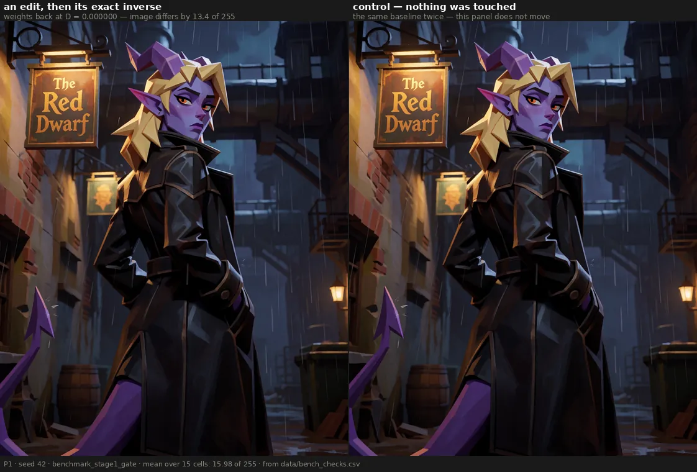
And one thing worth knowing about how this page came to exist: the number that calibrates nearly every threshold in this notebook — how much fine texture varies between two renders that differ only by their random seed — was wrong twice in one day before it was measured properly. That story is below, because a reader deserves to see how the sausage is made.
The verdict
The instrument holds. The tuner is bit-exact identity at gain zero, on 15 cells across three prompts. The pipeline reproduces a render exactly across a restart. The seed-to-seed floor of fine texture is 1.65% on P01 and 1.84% on P02, measured on 18 baseline seeds each.
Two findings here are stricter than expected and constrain the rest of the notebook. The round-trip sentinel sets a floor above the seed floor: weights returned to D = 0 do not return the image, by a mean of 16 of 255. And a change of seed leaves two baselines correlated at only 0.50 — which is a ceiling on how far any edit can usefully be pushed, not a noise floor, and the difference between those two readings has already cost this project one retracted analysis.
One arm is proven inert with a live sibling beside it. Two more are inert for reasons nobody has established.
Why I might be wrong
These checks are not pre-registered, and they do not need to be — but that is a claim in
itself. Each one has a criterion fixed before its value was looked at, and a pass or fail.
That makes them verification rather than hypothesis tests. If you think a criterion was chosen
after seeing the number, the criteria are in the criterion column of the measurement file and
the script that wrote them is in the provenance.
Bit-exact identity was checked on this checkpoint, at this precision. It is a property of the dtype round trip, so it has to be re-checked on any other architecture. On Anima it has not been.
The noise floor is two prompts. P01 and P02 have 18 baseline seeds each; three other prompts measured on a different bench came out two to three times noisier. Any threshold derived from 1.65% applies to the corpus it was measured on, and not automatically anywhere else.
Two of the four dead arms are unverified here. The claim that they produce no change comes from an earlier session's inspection of the latents, not from this page's measurement file. They are listed as open for that reason.
The data
How it was measured
Every row is a comparison between two renders with everything held fixed except the one thing
being tested, and every row carries the criterion it was judged against. The measurements are in
data/bench_checks.csv; nothing on this page is typed by hand.
Fine texture is std(gray − GaussianBlur(gray, σ=1.5)). Differences between renders are
reported either as the maximum channel difference, where the question is identical or not, or
as an RMS or mean over all channels, where the question is how much.
The numbers
| check | criterion, fixed first | measured | |
|---|---|---|---|
| tuner present, all gains at zero | max difference == 0 | 0 | pass |
| re-render across a restart | max difference == 0 | 0 | pass |
| edit followed by its exact inverse | > 0 — the image does not return | 15.98 | pass |
clipLULT at five doses |
== 0 at every dose | 0.0 | pass |
clipL1 at five doses (positive control) |
> 0 at every dose | 23.5 → 34.0 | pass |
clipL1 rising with dose |
each dose ≥ the one below | 23.5 → 27.5 → 26.1 → 33.1 → 34.0 | fail |
| noise floor, P01 | measured on ≥ 18 seeds | 1.65% | pass |
| noise floor, P02 | measured on ≥ 18 seeds | 1.84% | pass |
| two baselines, different seeds | reported, never used as a floor | r = 0.50 | measured |
The node adds nothing of its own
Fifteen cells — three prompts by five seeds — with the tuner in the graph and every gain at zero, against the same render with the node absent. Maximum channel difference: zero. Not a mean of zero, a maximum: no pixel differs anywhere.
This is the least interesting result on the page and probably the most important one. Without it, every displacement reported anywhere in this notebook could carry a constant offset that cancels in every contrast and inflates every effect size, and nothing would ever show it.
The same render twice, weeks apart
benchmark_profondita was generated on one evening using baselines rendered on another, with at
least one restart in between. If anything drifts between sessions, that comparison contains the
drift and no test would notice. Re-rendered today: maximum channel difference 0.
A note on the check itself, because the first attempt failed for the wrong reason. The specification asked for the SHA-256 of the file. A PNG carries its generation graph in a text chunk, and the new script writes a different graph, so the file hashes differ while every pixel matches. The correct comparison is on the decoded pixels or the compressed image stream. That was an error in how the task was written, not in the data.
The edit that undoes itself, and does not
The round-trip sentinel applies an edit and then its exact inverse. The weights return to exactly where they started — measured Frobenius displacement D = 0.0000. The image does not: mean channel difference 15.98 of 255, across fifteen cells.
Nothing is broken. It is rounding on the way there and back. But it sets a floor, and the floor has teeth: scaling one block group at ±0.50 sits at 0.0259 in perceptual distance against a round-trip floor of 0.0232, which is not distinguishable from having done nothing and then undone it. That result is withdrawn on this page rather than defended.
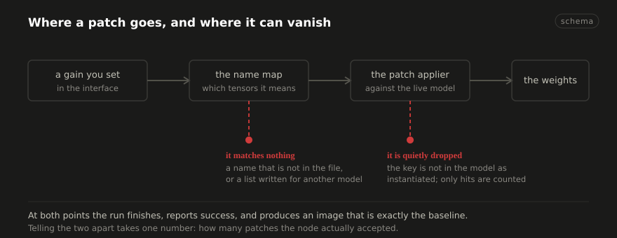
Four arms that do nothing, and one that proves the test works
One text-encoder arm, clipLULT, is exactly inert: RMS difference from the baseline of
0.0 at all five doses, from 0.005 to 0.200. Not small. Zero.
A claim of exact inertness is worthless on its own, because a broken comparison also returns
zero. So the sibling arm in the same run, at the same doses, against the same baseline, sits in
the row beneath it: clipL1 moves the image by 23.5 to 34.0 RMS. The comparison can fail, and
on that arm it does. That is the difference between a control and a decoration.
One correction falls out of putting all five doses in a file. Earlier write-ups describe
clipL1 as rising monotonically with dose and quote the two ends, 23.5 and 34.0. With the
middle three present it is 23.5 → 27.5 → 26.1 → 33.1 → 34.0, which rises overall and is not
monotone. It does not affect the arm's role as a positive control; it does mean the word
monotone has to go.
The floor that moved twice before it was measured
Nearly every threshold in this notebook is expressed as a multiple of how much fine texture varies between two renders that differ only by their seed. That number has a history:
| estimate | on what | |
|---|---|---|
| first | 1.15% | 3 seeds |
| second | 5.2% | borrowed from three different prompts, which are genuinely noisier |
| measured | 1.65% (P01), 1.84% (P02) | 18 seeds each, 153 pairs each |
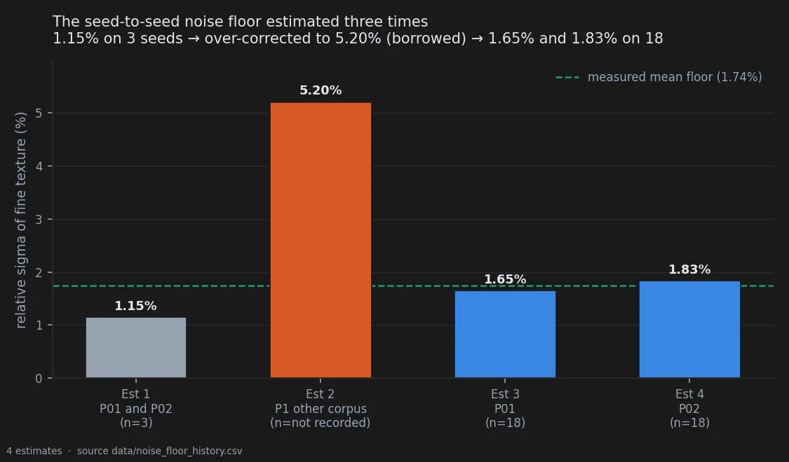
The first was unreliable: a standard deviation on three samples has two degrees of freedom and can be wrong by a factor of two or three. The correction then over-shot in the other direction by importing a figure from prompts that behave differently. In between, conclusions sitting at eleven to fourteen times the noise were briefly written up as fragile.
The rule that came out of it is worth more than the number, because it is what kept the conclusions standing while the floor moved twice:
A test of sign coherence is the primary instrument; an amplitude threshold is the trim. A sign test does not depend on σ at all, so it survives a floor that turns out to be wrong.
What is still unknown
Two further arms — the modulation weights and the block norms — produce latents reported as
bit-identical to the baseline at every dose, including one far beyond the usable range. Unlike
clipLULT, there is no architectural reason for it: the tensors exist in every block and are in
the active path. Scaling them must change the output, and it does not, which means the patch
is not arriving.
Worse, the tuner's own source carries a comment asserting that this checkpoint has no such tensor, and the entry was deleted from the map on that basis. The symptom was observed correctly and the diagnosis was inverted: the patch is not arriving became the target does not exist.
This page does not measure those two arms — the claim above comes from an earlier inspection of
the latents, not from bench_checks.csv — so they are recorded as open. The diagnosis is
cheap: one run that prints how many patches the node actually accepted. Zero means the selector
matches nothing; four means it matches and the patch is dropped further down.
The controls
The positive control for the dead-arm claim is clipL1, described above, in the same run at the
same doses.
The control for every fixed-seed comparison on this page is that at a fixed seed the null is exactly zero — established by the first check on the page, not assumed. A baseline at a different seed is not that control: two baselines at different seeds correlate at only 0.50, which makes a seed change a maximal perturbation rather than a noise floor. Using one as the other is what cost this project a retracted spatial analysis, and it is the reason the decorrelation figure appears here as a ceiling and nowhere as a floor.
Reproducing this
model:
checkpoint: krea2_turbo_bf16.safetensors
weight_dtype: default
sha256: not recorded — the file is outside the repository; see the note below
sampling:
sampler: euler_ancestral
steps: 9
cfg: 1.0
denoise: 1.0
scheduler: simple
resolution: 1024x1280
vae: qwen_image_vae.safetensors
tuner:
node: ArthemyKrea2ModelTuner
version: not recorded — the tuner is a separate repository
mode: varies by condition; every render carries its own graph in a tEXt chunk
prompts:
file: data/prompts.json
ids: [P01, P02, P1, P2, P3]
seeds: [42, 777, 1337, 9999, 4242145]
conditions:
- name: sentinel_zero
dose: 0.000
measured_D: 0.000000
- name: sentinel_roundtrip
dose: "edit then its exact inverse"
measured_D: 0.000000
- name: clipLULT_pos
dose: 0.005 / 0.020 / 0.050 / 0.120 / 0.200
measured_D: not applicable — a text-encoder gain, not a backbone displacement
- name: clipL1_pos
dose: 0.005 / 0.020 / 0.050 / 0.120 / 0.200
measured_D: not applicable — a text-encoder gain, not a backbone displacement
outputs:
folder: benchmark_stage1_gate, benchmark_determinismo, benchmark_testo_pilota, benchmark_pavimento_rumore
manifest: data/bench_checks.csv
analysis:
script: experiments/measure_bench.py
sha256: bd53f6a7f85784bafd4a8741d2d166cdc5dbc604951cc324571a4d9fd145be11
produces: data/bench_checks.csv
note: >
every value above was read back out of the renders themselves by
experiments/extract_repro.py, which also asserts that all four benches on this
page share one sampler configuration. They do.
Provenance
- Measurement file:
data/bench_checks.csv— one row per check, each with the criterion it was judged against - Script:
experiments/measure_bench.py - Renders:
benchmark_stage1_gate(360, sentinels and the norm-matched bench),benchmark_determinismo(1),benchmark_testo_pilota(30),benchmark_pavimento_rumore(32, the 18-seed floor) - Pitfalls that apply: 4 and 5 (a sentinel below the precision of the format, and an acceptance criterion mismatched to it), 10 (round-trip composition), 13 (a tolerance that returns its best candidate instead of failing), 15 (a gate that tallies misses and proceeds), 54 (assuming the node is a no-op instead of measuring it), 55 (a seed change used as a noise floor), 62 (a threshold calibrated on three seeds)
Ambiguous870 renders · 28 prompts · 20 seeds · 2026-09-21
What the edit puts in the picture, and what it takes out
In two minutes
A prompt asked for small barnacle-like clusters studding one earlobe. The stock model drew
them once in twenty renders. A weight edit that permutes blocks inside the checkpoint drew
them in nineteen of twenty — and a second edit, built to move the weights exactly as far but
by scrambling signs instead of permuting blocks, drew them once, which is the stock model's
own rate. So the thing that matters is not how far the weights moved. It is how they moved.
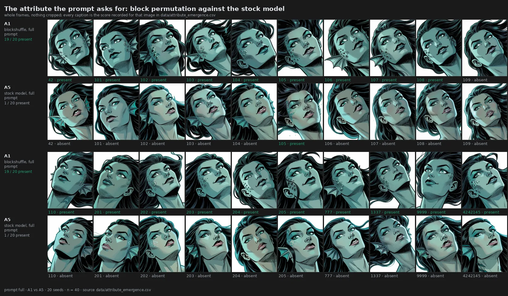
Then the same family of edits did it to something nobody asked for. On a separate corpus — a rally car in a jungle, eight drawing styles, no mention of lights anywhere in the prompt — one edit switched the headlights on in thirty-one renders of thirty-eight, and another switched them off in thirty-nine of thirty-nine, including scenes where the untouched model had lit them four times in five.
Both results are large and both have a matched control that does nothing. Neither was predicted in advance, and the design written to test whether any of this generalises was never run. That is why the page is filed as ambiguous rather than as a finding.
The verdict
A structured weight edit changes which things the model puts in a picture, not only how it draws them. Two arms of evidence: an attribute the prompt names and the model drops, recovered from 1/20 to 19/20; and an attribute the prompt never names, driven from 10/35 to 31/38 by one edit and to 0/39 by another. In both arms a displacement-matched control with scrambled signs sits at the untouched model's rate.
What the page does not support is the general statement. One attribute, one prompt family in the first arm; one object, one prompt in the second. No threshold was frozen before either measurement, the barnacle round was scored with the condition visible, and the pre-registered design that would have settled generality was never executed.
Why I might be wrong
No threshold was fixed before the data existed. Neither arm is confirmatory. The
attribute-emergence pre-registration exists and names the right design — attributes named
before rendering, blind scoring, (prompt, attribute) as the unit of analysis — and its own
closing note records that the attribute table was never filled and the primary test never run.
An unrun design is not a weaker result; it is no result.
The barnacle round was scored with the condition visible. The scorer was the author and he knew which image came from which arm. Hashing the filenames would not have fixed it either: on a separate corpus the same observer picked these conditions out of a four-way line-up at 17 of 20 and 12 of 20 against a 25% chance level, which is pitfall 34 and is measured on what ends up in the picture. With 18 discordant seeds to 0 the headline will not flip, but the intermediate cells are exactly where a borderline call moves a number: the DiT-only arm at 12/19 and the 0.50 dose point at 5/6 scorable are the two that a biased eye could have made.
The headlight round was blind, and still is not a confirmation. The observation was born by looking at those renders and is measured on the same renders. This is quantification of something already seen, and a number produced that way is an upper bound on what a fresh corpus would give. Three consecutive confirmation rounds elsewhere in this notebook have come back between a third and a half of their exploratory estimate.
The statistic is at its floor and looks weaker than the effect. With six informative prompts all moving the same way, the smallest value the exact test can return is 2/2⁶ = 0.0312, and Holm across six conditions needs 0.0083. No effect of any size could have cleared that bar on this design. The right reading is neither "significant" nor "weak" but "floored" — the same structural ceiling that rule 8 of the error log describes.
Four images were scored twice during the blind round. Two of them received a different score the second time, because the viewer appended a row instead of replacing one — pitfall 35, whose registry entry is this very round. Counting both rows reads the preset at 32/39 instead of 31/38. The published rates reproduce exactly under "the later score wins", the remedy the registry names, so that is the rule this page applies; between keeping the later score and keeping the earlier one the only condition that moves is the scrambled control at double strength, 2/36 rather than 3/37, and no headline number.

The obvious confound was checked, and the first check was wrong. The edit darkens the image by 3.3 of L*, and lit headlights are more plausible in a dark scene. The first version stratified on the lightness of each image as rendered — conditioning on a quantity the treatment moves, which does not hold a confounder still, it re-creates it. The correct stratifier is the lightness of the unmodified render of the same scene, fixed before any weight is touched. That is pitfall 39, and the corrected table is the one above.
The data
How it was measured
Two corpora, built five months of project time apart, sharing nothing but the tuner.
The barnacle corpus is 390 renders across 24 arms: the complete prompt, six single-variable
prompt knockouts, a length- and syntax-matched neutral control, a second subject sharing the
scaffold, an eight-point dose ladder, and a split of the edit into its DiT half and its
text-encoder half. Twenty seeds in every cell that carries a headline. Each render is scored
present / absent / ambiguous against a rule written before scoring and stored in
data/attribute_emergence_recipe.json: a growth on the face at least partially circumscribed
by a black contour line counts; a lighter circle without thickness, or a single isolated
circle, does not.
The headlight corpus is 280 renders: one prompt, eight drawing styles, seven conditions, five seeds. Scoring was blind to condition — files copied under hashed names, order shuffled, the key sealed in a file that was not opened until the last score was recorded. The scale is three-way: lit, unlit, cannot tell. A cannot-tell leaves the numerator and the denominator, which is why the denominators below are not all 40.
The attribute the prompt asks for
| arm | condition | present | rate |
|---|---|---|---|
| A1 | block permutation, complete prompt | 19 / 20 | 0.95 |
| A5 | stock model, complete prompt | 1 / 20 | 0.05 |
| A7 | sign scramble, complete prompt, identical D | 1 / 20 | 0.05 |
| B6 | block permutation, second subject, scaffold intact | 20 / 20 | 1.00 |
| B7 | stock model, second subject | 7 / 20 | 0.35 |
Not one seed goes the other way in either paired comparison. The effect is conjunctive: it needs the prompt to supply a two-token local scaffold, and removing either token collapses it.
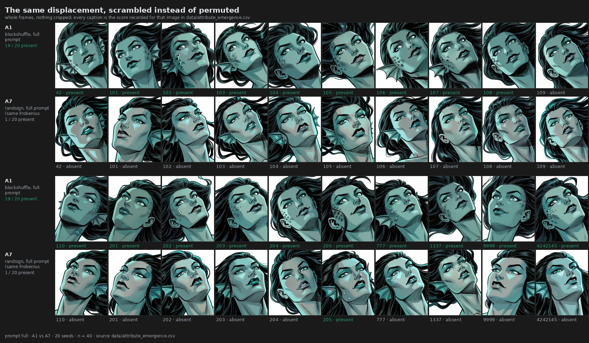
| prompt variant | arm | present |
|---|---|---|
| complete | A1 | 19 / 20 |
| second subject, scaffold intact | B6 | 20 / 20 |
| the morphological phrase removed | E3 | 1 / 20 |
| the ontological anchor removed | C1 | 0 / 10 |
| the keyword kept, marine context removed | A3 | 0 / 20 |
| length- and syntax-matched neutral | A4 | 0 / 20 |
| second subject, no keyword | B1 | 0 / 20 |
| second subject with keyword, no marine context | B2 | 0 / 20 |
| third subject, no morphological phrase | B5 | 0 / 20 |
The sharpest number is the one that looks least impressive. With the morphological phrase removed, the edited model scores 1/20 — and the stock model on the complete prompt also scores 1/20. Paired, that is one discordant seed each way: without the scaffold, the weight edit is indistinguishable from not having applied it.
Splitting the edit and walking its dose both behave the way a real mechanism should rather than the way noise would.
| split | present | dose | present | |
|---|---|---|---|---|
| DiT and text encoder | 19 / 20 | 0.25 | 1 / 10 | |
| DiT only | 12 / 19 | 0.50 | 5 / 6 scorable | |
| text encoder only | 3 / 20 | 0.75 | 10 / 10 | |
| stock | 1 / 20 | 1.00 | 19 / 20 | |
| 1.25 | 8 / 10 | |||
| 1.50 | 6 / 10 | |||
| 1.75 | 5 / 10 | |||
| 2.00 | 1 / 10 |
The text encoder alone does nothing measurable; the DiT carries most of the effect. The dose curve has an optimum near 0.75–1.00 and fails at both ends — at 2.00 the displacement is largest and the attribute is gone, which is the opposite of what "any disturbance helps" would predict. At ten seeds a point the extremes are separated and the intermediate points are not ordered by these data.
One more thing the figure shows and the table cannot: the attribute emerges in the wrong place.
The prompt says studding one earlobe, and across every positive render the clusters sit on
the cheekbone and temple. The edit recovers the presence of a neglected concept and leaves
its placement exactly as wrong as the stock model would have left it.
The attribute nobody asked for
The rally-car prompt says nothing about lights. Headlights are simply a thing a car has.
| condition | lit / scorable | rate | cannot tell |
|---|---|---|---|
| baseline | 10 / 35 | 0.286 | 5 |
| preset ×1 | 16 / 36 | 0.444 | 4 |
| preset ×2 | 31 / 38 | 0.816 | 2 |
| permutation, negative sign, ×1 | 6 / 38 | 0.158 | 2 |
| permutation, negative sign, ×2 | 0 / 39 | 0.000 | 1 |
| sign scramble ×1 | 7 / 39 | 0.179 | 1 |
| sign scramble ×2 | 2 / 36 | 0.056 | 4 |

Only the positive direction had been noticed by eye. The measurement added the other one: the negative permutation puts the lights out in thirty-nine renders of thirty-nine, including the style where the untouched model had them lit four times in five.

Per style, from data/stage9_headlights_by_style.csv:
| style | baseline | preset ×2 | permutation neg ×2 |
|---|---|---|---|
| photography | 3 / 5 | 5 / 5 | 0 / 5 |
| watercolour | 0 / 3 | 5 / 5 | 0 / 5 |
| low poly | 1 / 5 | 5 / 5 | 0 / 5 |
| claymation | 4 / 5 | 5 / 5 | 0 / 5 |
| ukiyo-e | 0 / 5 | 0 / 5 | 0 / 5 |
| pixel art | 0 / 5 | 1 / 3 | 0 / 4 |
| stained glass | 2 / 2 | 5 / 5 | 0 / 5 |
| charcoal | 0 / 5 | 5 / 5 | 0 / 5 |
Six styles of eight reach 5/5, and two of those started from zero. A monochrome charcoal drawing lighting its headlights in all five seeds is the single most surprising cell in the table. The two styles that do not move are not counterexamples: stained glass was already at the ceiling, and ukiyo-e sits at zero in all seven conditions, which is a style that never depicts lit headlights rather than a failure to respond.
The confirmation that was run, and could not answer
The pre-registration of the next experiment registered a second hypothesis on its own corpus:
the same headlight prediction, with its own frozen directional clause, on 250 renders of a
vintage sports car on a coastal road. Those renders exist and the round was scored blind on
2026-09-21 against a criterion frozen first, in docs/stage12_headlights_criterion.md. Every
score re-joins to the sealed key of that round without a single disagreement.
It returned nothing, and the reason is visible before any effect size.
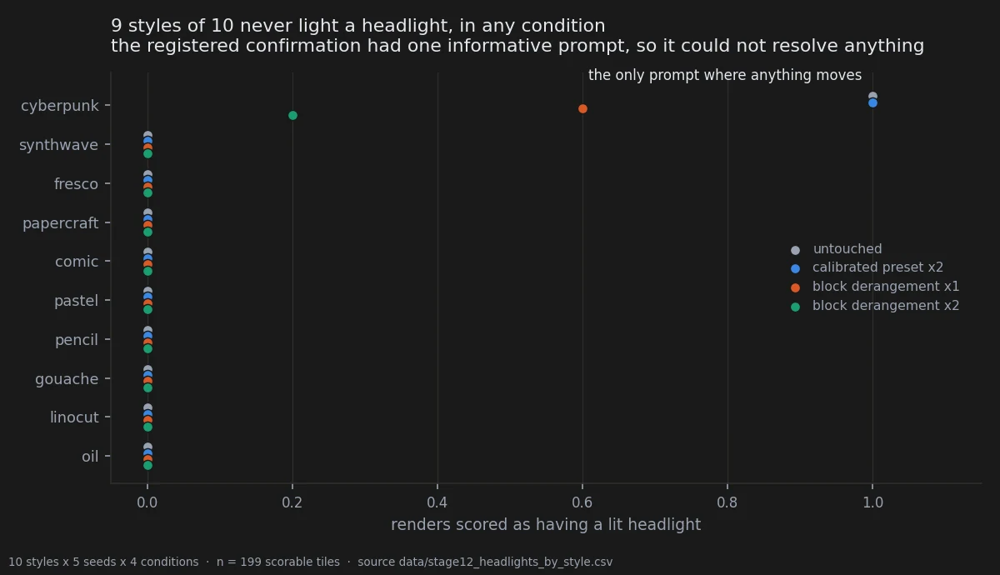
| condition | lit / scorable | rate |
|---|---|---|
| untouched | 5 / 49 | 0.102 |
| calibrated preset ×2 | 5 / 50 | 0.100 |
| block derangement ×1 | 3 / 50 | 0.060 |
| block derangement ×2 | 1 / 50 | 0.020 |
Nine styles of ten never light a headlight in any condition, the untouched model included.
All sixteen lit renders in the round belong to one style. With one informative prompt the exact
sign-flip test's floor is 2/2¹ = 1.0: no effect of any magnitude could have reached
significance, which is rule 11 of the fifteen, and it was decidable before a single image was
rendered. The subject sentence pins golden hour, clear sky — a bright daylight scene, where
headlights off is what the object looks like.
Inside the one informative style the two arms behave as predicted and cannot be tested. The untouched model lights 5 of 5, so the positive prediction has no room to move; the derangement takes it to 3 of 5 at single dose and 1 of 5 at double, which is the extinguishing direction of the first corpus with a dose gradient, on five renders.
So the claim does not gain a confirmation and does not lose one. What it gains is a boundary: on a bright daylight corpus the trait has no variance to steer, and the round that would settle the question needs a corpus where headlights are marginal — dusk, night, or styles that depict them — chosen on that criterion before rendering. The pre-registration offered this second outcome as something that travelled with the corpus for free. It did not: a hypothesis about a trait needs a corpus in which the trait can move, and that is a design requirement, not a bonus.
Two things the round did establish about itself. The scorer was not the pre-registered one and knew the hypothesis, which is declared in the criterion document along with three other deviations. And the criterion was tightened after 27 tiles, before the key was opened; repeating the whole table on the 175 tiles scored afterwards moves the rates to 0.114, 0.087, 0.073 and 0.023 and changes nothing. Of the twenty tiles shown twice, nineteen scored identically and the disagreement was uncertain against unlit, never lit against unlit.
The controls
The control that decides what this finding is, in both arms, is the norm-matched scramble. It
carries the identical Frobenius displacement — 0.0538 relative on the DiT, 0.0256 on the text
encoder, measured and recorded in data/preset_displacements.csv, not nominal — and differs
from the permutation only in the structure of the perturbation. In the barnacle corpus it
scores 1/20, exactly the untouched model's rate. In the headlight corpus it scores 2/36 at
double strength, below baseline rather than above it.
Without that control the obvious reading survives: any push of that size shakes a secondary token loose. With it, that reading is dead. Two points separate structure from magnitude; they do not identify which structural property does the work. Block coherence is the obvious candidate, and "permutation rather than sign flip" and "preserves each block's internal correlations" are not distinguished by two points.
Every crop in this experiment has been withdrawn. The first version of these figures cropped to the attribute region using rectangles typed into the source, and five rectangles of twenty did not contain the thing their caption named; one panel was captioned as showing a lit headlight for a cell that is scored unlit in all five seeds of all seven conditions. The figures on this page are whole frames, composed by scripts that read the recorded score and derive every caption from it. That is pitfall 40, and until a locator exists that has been qualified against the corpus, whole frames are the only honest option.
One attribute, one prompt family
The two positive prompts in the barnacle arm share nearly every token. Whether this reaches
other neglected attributes on unrelated subjects is untested, and the design that would have
tested it — attributes named before rendering, blind scoring, (prompt, attribute) as the unit
— was written, deposited, and never executed. Its own status note records the reason: the
attribute table was never filled, and by the rule written into the document it can no longer be
filled now.
In the headlight arm it is one object and one prompt. A car has headlights the way a face has eyes. Whether the effect is "the edit completes objects" or "the edit likes bright spots on cars" is not decided by cars alone.
There is one thing worth recording about where this sits. The phenomenon has a name — catastrophic neglect, a text-to-image model failing to render a concept its prompt contains — and the published remedies operate at inference time by re-weighting cross-attention maps. This checkpoint has no cross-attention in its blocks at all: text enters once upstream and reaches each of the 28 blocks as an adaptive modulation vector. The standard fix has nothing to grab hold of here, which is part of why a static, prompt-preserving change in weight space is worth reporting even at this evidential strength.
Reproducing this
model:
checkpoint: krea2_turbo_bf16.safetensors
weight_dtype: default
sha256: not recorded -- the file is outside the repository
text_encoder: qwen3vl_4b_bf16.safetensors
vae: qwen_image_vae.safetensors
sampling:
sampler: euler_ancestral
steps: 9
cfg: 1.0
denoise: 1.0
scheduler: simple
resolution: 1024x1280
tuner:
node: ArthemyKrea2PresetLoader
version: not recorded
mode: preset_json
strength_model: 1.0
strength_clip: 1.0
graphs:
- assets/02_attribute_emergence/workflow_baseline.json
- assets/02_attribute_emergence/workflow_blockshuffle.json
- assets/02_attribute_emergence/workflow_randsign.json
prompts:
file: data/attribute_emergence_recipe.json
ids: [full, hybrid, no_ridges, no_sea_touched, no_keyword, isolated,
matched_neutral, hag_base, hag_keyword, teal_sea_hag]
seeds: [42, 101, 102, 103, 104, 105, 106, 107, 108, 109, 110,
201, 202, 203, 204, 205, 777, 1337, 9999, 4242145]
conditions:
- name: blockshuffle
preset: Arthemy_Bench_BLOCKSHUFFLE.json
measured_D: 0.05381584 # relative, DiT; 0.02562789 on the text encoder
- name: randsign
preset: Arthemy_Bench_RANDSIGN.json
measured_D: 0.05381584 # identical by construction -- that is the point
- name: baseline
preset: null
measured_D: 0.0
outputs:
folder: assets/02_attribute_emergence
manifest: data/attribute_emergence.csv
analysis:
script: experiments/notebook_figures.py
produces: assets/02-attribute-emergence/F02.4_barnacle_census_A1_A5.webp
second_corpus:
renders: outside the repository -- benchmark_stage9/renders
manifest: data/stage9_headlights_key.csv
scores: data/stage9_headlights_raw.csv
script: experiments/headlights_by_style.py
produces: data/stage9_headlights_by_style.csv
The second corpus is the one gap a stranger would hit: its 280 renders live outside the
repository, so experiments/build_figures_headlights.py needs the render folder passed to it
before it can rebuild F02.1 to F02.3. The scores, the sealed key and the derived tables are all
here; the pixels are not.
Provenance
Pre-registration. None for the results on this page. docs/prereg_attribute_emergence_stage7.md
designs the confirmation and records, in its own closing note, that it was never run.
Measurement files. data/attribute_emergence.csv (390 scored renders),
data/attribute_emergence_recipe.json (the scoring rule and generation settings),
data/preset_displacements.csv (measured displacements),
data/stage9_headlights_raw.csv and data/stage9_headlights_key.csv (the sealed blind round),
data/stage9_headlights_results.csv and data/stage9_headlights_pretreatment_strata.csv
(condition rates and the corrected stratification),
data/stage9_headlights_by_style.csv (derived here, 2026-09-21).
The second corpus: data/stage12_headlights_raw.csv (the blind round),
data/stage12_images.csv (its manifest), data/stage12_bbox_key.csv (the sealed key the
scores were joined to), data/stage12_headlights_results.csv (the round's own summary) and
data/stage12_headlights_by_style.csv (derived here).
Scripts. experiments/notebook_figures.py (F02.4, F02.5),
experiments/notebook_charts.py (F02.6), experiments/stage12_headlights.py,
experiments/build_figures_headlights.py (F02.1 to F02.3),
experiments/headlights_by_style.py, experiments/score_headlights.py,
experiments/analyze_headlights.py.
Written up in. docs/stage10_headlights_results.md, docs/figure_brief.md,
docs/stage12_headlights_criterion.md (the second corpus's frozen criterion and its four
declared deviations).
Pitfalls that apply. 26 (Fisher's exact on paired binary outcomes, where McNemar on the discordant pairs is the right test and is what the tables above use), 34 (an expert observer is not blinded by hashed filenames), 35 (a scoring viewer that appends a row when the scorer goes back to correct — the four re-scores in this round are the registry's own example), 39 (stratifying on a covariate the treatment itself moves), 40 (a figure whose caption and crop were typed by hand), 50 (reporting a treatment-versus-control difference as a property of the treatment).
Rules 8 and 9 of the fifteen also bear on this page: the resolution floor of an exact test, and blinding as a measurement rather than a procedure. Those are rules, and an earlier draft of this page cited them in the front matter by the pitfall registry's numbering, where 8 and 10 are two unrelated entries.
Holds250 renders · 10 prompts · 5 seeds · pre-registered · 2026-09-21
How much room the subject takes, and how blind I actually was
In two minutes
Two things were noticed by eye: under one of the edits the car seems to take up more of the frame. The first attempt to measure that was worthless, and it took a while to see why — the boxes were drawn on the same images that produced the observation, by someone who knew the hypothesis, after the scoring key had already been opened eight minutes earlier for a different task. It returned a ratio of 2.14, the car growing from 13% to 28% of the canvas.
So the prediction was written down, frozen, and a new corpus built: ten styles never used before, a different vehicle in a different setting, every image randomly mirrored, flipped, hue-rotated, re-saturated, re-brightened and noised, with the disturbances recorded. The annotator saw each render for the first time inside the annotation tool.
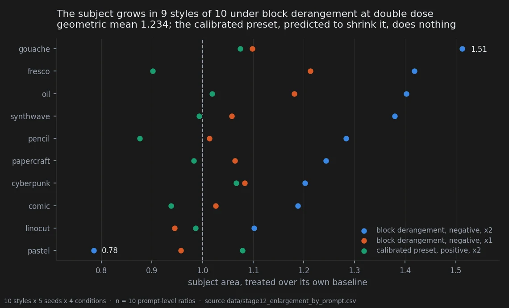
The effect survived, at about a fifth of the size the first round claimed. All three predicted signs came out right.
Then the more useful half. The same round measured the annotator. Twenty trials, four images side by side, and the task was to point at which was which — chance is 25%. He identified one condition 17 times in 20 and the other 12 times in 20, through all of that mirroring and hue rotation. The blinding failed, and now it is a number rather than an argument. It applies backwards to every human-scored round in this notebook.
It does not, however, explain the size result — and the reason is an asymmetry worth following: the condition recognised almost perfectly is the one where no effect was drawn at all.
The verdict
The subject enlargement is real and much smaller than it first looked. On ten styles that did not exist when the prediction was frozen, the block-derangement edit at double dose gives a geometric mean area ratio of 1.234 with 9 of 10 styles above 1; at single dose 1.061 with 8 of 10; and the calibrated preset, predicted to move the other way, gives 0.989 — right sign, no magnitude. The pre-registered test passes after Holm correction under all four readings of the statistic the pre-registration failed to name.
Separately, and on the same round, the blinding of the annotation was measured against a threshold fixed in advance and failed: an expert observer picks these conditions out of a four-way line-up well above chance. That is pitfall 34, this page is where it was measured, and rule 9 of the fifteen — blinding is a measurement, not a procedure — was written from it.
Why I might be wrong
The statistic was not named in advance, and this page is where that shows. The pre-registration fixed "exact sign-flip permutation on the ten prompts" and stopped there. Four readings are defensible, and a family of four chosen after seeing the answers is a degree of freedom even when the four agree. They do agree here — Holm-corrected p from 0.018 to 0.035, all four below 0.05 — which is the only reason this is a footnote rather than the verdict.
An earlier verification of this round reported that the most defensible statistic failed, and
that does not reproduce. docs/stage12_verifica.md §5 gives 0.0176 raw and 0.0527 after Holm
for the mean of the per-prompt log ratios, and concludes "confirmed with reservation". Two
independent recomputations here give 0.0117 raw and 0.0352 after Holm — 12 of the 1024 sign
patterns, not 18 — and that is also exactly what data/stage12_bbox_results.csv has recorded
since the round was run, alongside its own verdict of confirmed. The table is now persisted to
data/stage12_enlargement_tests.csv so the disagreement can be settled by running one script.
Until someone reproduces the 0.0527, this page treats the primary as passed.
The negative control is the weak part. The calibrated preset was predicted to visibly shrink the subject and instead does essentially nothing: ratio 0.989, 4 prompts of 10 above 1, p = 0.64. The sign is right and the magnitude is absent. A bidirectional prediction was the main defence against a one-directional unconscious bias, and it is satisfied only in half.
One of the ten styles goes the other way. Pastel comes in at 0.785, the only style below 1, and it sits in the group where the annotator could not identify the condition at all. Nine of ten is not ten of ten, and the one that dissents dissents by more than most of the others agree.
The resolution floor is close. With ten prompts the exact sign-flip test cannot return less than 2/2¹⁰ = 0.00195, and Holm across three conditions moves the usable threshold in steps of that size. The verdict is stable across the four statistics but the p-values live within a factor of three of the floor; that is the granularity of the test, not the strength of the effect, and it is rule 11 of the fifteen.
Fifty renders of this corpus were never looked at. The batch was 250 — five conditions — and the annotation round covered four. See what this cannot separate.
The data
How it was measured
Ten styles, one subject sentence shared by all ten, five seeds, five conditions: 250 renders,
manifest in data/stage12_images.csv, prompts hashed and frozen in the pre-registration before
rendering. The measure is a four-point bounding box drawn by hand around the subject, and the
statistic is a ratio — the treated area over the area of its own paired baseline — because
percentage points of canvas are not comparable across corpora with different framing.
The unit of analysis is the prompt, not the cell. Five seeds inside one style are repeated measures on one subject, and treating them as thirty or fifty independent observations is pitfall 17. Each style contributes one ratio; the test runs on ten numbers.
Blinding had three levels, all fixed in the pre-registration: the annotator never saw a render before annotating it, not even as a contact sheet or a quality check; the key was written before and opened after; and every image carried randomised mirroring, flipping, hue rotation, saturation between 0.6 and 1.6, brightness between 0.85 and 1.15 and Gaussian noise up to σ = 4, with the parameters stored per image. Twenty images were shown a second time with a different mirror state, hidden among the rest. Total presented: 220.
The subject grows, and by how much
| condition | geometric mean ratio | arithmetic mean | styles above 1 | predicted |
|---|---|---|---|---|
| block derangement, negative, ×1 | 1.061 | 1.064 | 8 / 10 | grows |
| block derangement, negative, ×2 | 1.234 | 1.252 | 9 / 10 | grows more |
| calibrated preset, positive, ×2 | 0.989 | 0.992 | 4 / 10 | shrinks |
All three signs are as predicted and the double dose exceeds the single dose, which is the directional clause of the pre-registration and it is binding: a condition reaching significance with the wrong sign would have counted as a failure of the whole document.
The primary test, under each of the four readings of "exact sign-flip permutation on ρ", from
data/stage12_enlargement_tests.csv:
| statistic | value at ×2 | p | p after Holm across 3 conditions |
|---|---|---|---|
| mean of the per-prompt log ratios | 0.2103 | 0.0117 | 0.0352 |
| log of the mean ratio | 0.2245 | 0.0078 | 0.0234 |
| mean of ρ − 1 | 0.2517 | 0.0098 | 0.0293 |
| mean difference in percentage points | 5.092 | 0.0059 | 0.0176 |
Against the first round's 2.14, the confirmed effect is roughly a fifth of the size in log-ratio terms. That shrinkage is the third time this notebook has watched an exploratory estimate come back between a third and a half of itself, and it is the first time there is a mechanism rather than a shrug: the first round was annotated after the key had been opened, on images already examined.
The annotator is the instrument
Everything above rests on a person looking at pictures and writing down numbers while knowing what the experiment is about. Until this round that weakness had only ever been argued about.
Twenty trials. Four images from one style at four distinct seeds — the target at double dose, the second target, a near-foil at half the dose of the first target, and an untouched baseline — in an order the annotator could not see, under the same disturbances as the main task. The task was to name two of the four. The threshold was fixed before the round at 5 joint hits in 20.
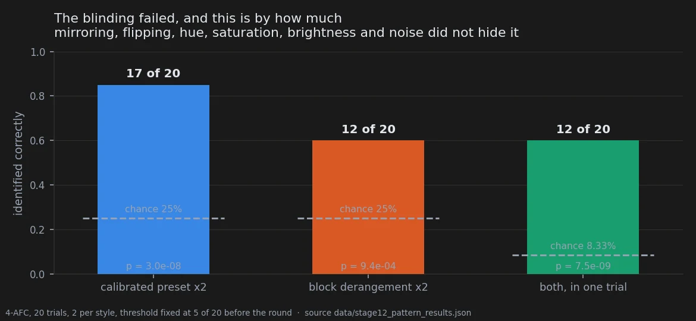
| target | identified | chance | p |
|---|---|---|---|
| calibrated preset ×2 | 17 / 20 | 25% | 3.0 × 10⁻⁸ |
| block derangement ×2 | 12 / 20 | 25% | 9.4 × 10⁻⁴ |
| both, in one trial | 12 / 20 | 8.3% | 7.5 × 10⁻⁹ |
Observed 12 joint hits against a threshold of 5. Mirroring, flipping, hue rotation, saturation, brightness and noise did not hide the conditions from the person who characterised them.
This is uncomfortable to publish and it is the most useful measurement on this page, because it applies backwards: every scoring round in this notebook before this one had assumed a blinding it never tested, including the barnacles on the previous page.
Where the blinding held
Two independent arguments say the failed blinding does not produce the size result, and the first is the stronger.
The asymmetry. The condition identified almost perfectly — the calibrated preset at 85% — is the one where no size effect was drawn at all, against a registered prediction that said it shrinks. The condition identified only 60% of the time is the one carrying the effect. If recognising the condition were steering the hand, this would be the wrong way round: the predicted shrinkage would have appeared exactly where the hand knew what it was looking at.
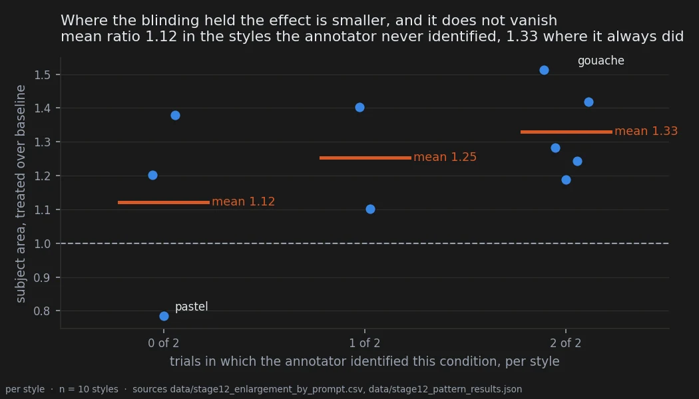
The gradient, which is real and is reported as such. Crossing per-style discriminability with per-style effect: in the five styles the annotator identified both times, the mean ratio is 1.329; in the three he identified neither time, 1.122. There is a gradient, and part of the effect may be inflated where he could tell. But the effect does not disappear where the blinding held — two of those three styles still grow, by 20% and 38%, and the third is the pastel outlier at 0.785 that pulls that group's mean down on its own.
The controls
The instrument's own noise, from the twenty hidden duplicates. Mean absolute difference between two annotations of the same image: 0.27 percentage points of canvas (sd 0.24), median relative error 0.95%, test-retest correlation r = +0.995. The measured effect is about twenty times that. This quantity had never been measured in this project before.
The disturbances did not move the hand. Regressing annotated area on the disturbances we applied ourselves, over the fifty original baseline annotations:
| disturbance applied | slope, points of canvas per unit | r | p |
|---|---|---|---|
| saturation | −1.53 | −0.096 | 0.50 |
| brightness | +11.69 | +0.229 | 0.10 |
| noise σ | +0.30 | +0.076 | 0.60 |
The saturation we imposed does not predict how large the rectangle is drawn. The bias the first round feared is excluded by a measurement rather than by an argument, which was the point of the design. Brightness is the largest of the three and does not reach significance; it is the one to watch.
Two figures from this round are not published here, and the reason is the rule they break.
assets/03_what_ends_up_in_the_picture/_figures holds a paired frame with the annotated boxes
drawn on and a reproduction of two line-up trials. Both are composed by
experiments/build_figures_stage12.py with the box coordinates, the mirror correction and every
caption typed into the source rather than read from data/stage12_bbox_raw.csv and the sealed
key. That is pitfall 40 exactly, and the renders needed to rebuild them from the annotation file
live outside the repository. The charts above carry the same claims from the measurement files.
What this cannot separate
The batch was 250 renders across five conditions. The bounding-box round annotated four of them: baseline, the derangement at both doses, and the preset at double dose. The fifty renders of the preset at single dose have still never been scored.
The second confirmatory hypothesis this corpus was built to carry — the pre-registration's
§"Un secondo esito", a headlight confirmation on these same images with its own frozen
directional prediction — was scored blind on 2026-09-21, on the four annotated conditions. It
returned nothing usable, and not because the effect was absent: nine of the ten styles never
light a headlight in any condition, the untouched model included, so the test had one
informative prompt and a floor of 2/2¹ = 1.0. The subject sentence pins golden hour, clear
sky, and a bright daylight scene is one where the trait cannot move. That was decidable from
the prompt before rendering, and the pre-registration treated the second hypothesis as
travelling with the corpus for free. The round is written up on
what the edit puts in the picture.
An arm that was rendered and not examined is not a spare, and a hypothesis attached to a corpus that cannot express it is not a test.
More importantly for the claim itself: no sign-scrambled edit at the identical displacement was rendered. The round therefore separates two structured edits from each other and from doing nothing, and says nothing about structure against magnitude. That control exists elsewhere in the notebook — it is what makes the attribute-emergence result mean what it means — and it is missing here. Until it is in the design, the enlargement is a fact about this edit and not yet a fact about structured edits.
Two further limits carry over unchanged: one subject, ten styles, one model; and the scorer is the author, whose discriminability is now measured but not removed.
Reproducing this
model:
checkpoint: krea2_turbo_bf16.safetensors
weight_dtype: default
sha256: not recorded -- the file is outside the repository
text_encoder: qwen3vl_4b_bf16.safetensors
vae: qwen_image_vae.safetensors
sampling:
sampler: euler_ancestral
steps: 9
cfg: 1.0
denoise: 1.0
scheduler: simple
resolution: 1024x1280
tuner:
node: ArthemyKrea2PresetLoader
version: not recorded -- suite_git_sha ba28b12532175220
mode: preset_json
prompts:
file: data/stage12_images.csv
ids: [S01_oil, S02_linocut, S03_cyberpunk, S04_gouache, S05_pencil,
S06_pastel, S07_comic, S08_papercraft, S09_fresco, S10_synthwave]
hashes_frozen_in: docs/prereg_stage12_ingrandimento.md
seeds: [42, 777, 1337, 9999, 4242145]
conditions:
- name: baseline
preset: null
strength: 1.0
measured_D: 0.0
- name: blockshuf_neg_1x
preset: Arthemy_Bench_BLOCKSHUFFLE_NEG.json
strength: 1.0
measured_D: 0.05381584 # relative, DiT; data/preset_displacements.csv, status PASS
- name: blockshuf_neg_2x
preset: Arthemy_Bench_BLOCKSHUFFLE_NEG.json
strength: 2.0
measured_D: 0.05381584 # measured at strength 1.0; NOT re-measured at 2.0 -- see note
- name: preset_pos_1x
preset: Arthemy_Bench_Base.json
strength: 1.0
measured_D: 0.05381584
- name: preset_pos_2x
preset: Arthemy_Bench_Base.json
strength: 2.0
measured_D: 0.05381584 # measured at strength 1.0; NOT re-measured at 2.0 -- see note
outputs:
folder: benchmark_stage12/renders
manifest: data/stage12_images.csv
annotation:
key: data/stage12_bbox_key.csv
boxes: data/stage12_bbox_raw.csv
discrimination_key: data/stage12_pattern_key.csv
discrimination_answers: data/stage12_pattern_raw.csv
analysis:
script: experiments/stage12_enlargement_by_prompt.py
produces:
- data/stage12_enlargement_by_prompt.csv
- data/stage12_enlargement_tests.csv
- data/stage12_annotator_noise.csv
figures: experiments/notebook_charts.py
One honest gap in that block. data/preset_displacements.csv records each preset's displacement
at strength 1.0 and nothing was measured at strength 2.0, so the double-dose rows above carry
the single-dose measurement rather than their own. Doubling it would be a nominal number, which
is what pitfall 13 exists to prevent, so the measured value is given with the gap named. The
conditions are still distinguished by strength in the manifest, which is what was actually
varied.
Provenance
Pre-registration. docs/prereg_stage12_ingrandimento.md, deposited 2026-09-18 before a
single render, with the corpus, the hashes, the three predicted signs, the decision rule and the
diagnostics to publish whatever the outcome. The four-way discrimination test is registered in
the same document as experiment 12-B, with its threshold of 5 joint hits in 20 fixed before the
round.
Verification. docs/stage12_verifica.md (independent recomputation, 2026-09-18) and
docs/stage10_bbox_verification.md (the first round, and the correction that followed from it).
Measurement files. data/stage12_images.csv (250-render manifest with the sampler settings
and the prompt text), data/stage12_bbox_key.csv and data/stage12_bbox_raw.csv (the sealed key
and the 220 annotations), data/stage12_bbox_results.csv (condition-level result as the round
produced it), data/stage12_pattern_key.csv, data/stage12_pattern_raw.csv and
data/stage12_pattern_results.json (the line-up round), and three tables derived here on
2026-09-21: data/stage12_enlargement_by_prompt.csv, data/stage12_enlargement_tests.csv,
data/stage12_annotator_noise.csv.
Scripts. experiments/stage12_enlargement_by_prompt.py, experiments/notebook_charts.py,
experiments/analyze_stage12_ingrandimento.py, experiments/analyze_stage12_pattern.py,
experiments/prepare_stage12_blind.py, experiments/prepare_stage12_pattern.py.
Pitfalls that apply. 17 (treating cells as independent observations when the unit is the prompt), 34 (an expert observer is not blinded by hashed filenames — this page is the entry's own source), 40 (a figure whose caption and crop were typed by hand, which is why two figures from this round stay unpublished).
Rules 9 and 11 of the fifteen were both written out of this round: blinding is a measurement, and the resolution floor decides how many tests a family can hold before anything is rendered.
Holds386 renders · 2 prompts · 3 seeds · pre-registered · 2026-09-20
What an edit steers, and what it costs
In two minutes
Every knob on a machine does two things. It does the thing you turned it for, and it does something else you did not ask for and have to live with. A volume dial adds hiss. A sharpening slider adds grain.
For most of this project I had only been measuring the first thing. I would push a block in one direction, see the picture change, and write down how much. What that cannot tell you is whether the change reverses when you push the other way — and that difference decides everything. If it reverses, you have a knob: something you can aim. If it happens either way, you have a cost: something you pay for touching that part of the model at all.
So this time I pushed all 28 blocks in both directions, at the same strength, and separated the two.
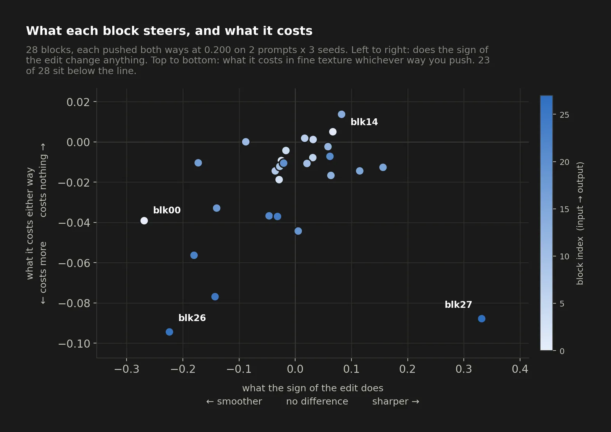
The answer came out in two halves.
Almost everything is cost. Whichever way you push, whichever block you pick, the image loses fine texture — about 2% of it on average, in 23 blocks out of 28. And the loss is not spread evenly: it gets worse the closer you get to the output. That is not a knob, it is friction, and it had been invisible to me because I had only ever looked at the difference between the two directions, which is exactly the quantity that throws it away.
A few things really are knobs, and two of them point opposite ways. The last blocks sharpen when pushed one way and soften when pushed the other. The first block does the same thing backwards. Two ends of the same network, two knobs, opposite signs.
And one practical thing fell out that I did not expect. On the last blocks the two directions are wildly unequal: pushing block 26 positive wrecks the picture, pushing it negative barely moves it — a factor of nine. If you are tuning, the negative side of the tail is the safe side.
The verdict
The common mode — what an edit does regardless of its sign — is a cost, and it scales with depth. Mean 0.978 of the baseline's fine texture, 23 of 28 blocks losing rather than gaining, correlation with block index r = -0.659, measured at 11 to 14 times the noise floor.
Two knobs exist at the two ends of the backbone and they run in opposite directions: the first block smooths on a positive push and etches on a negative one; the tail does the reverse. The tail is also strongly rectified — up to 9.1× more movement in the positive direction than in the negative — which makes the negative side the safe one for tuning.
Two of the eight frozen predictions were falsified, and both were falsified toward "the model is more regular than I expected", not less.
Why I might be wrong
Two prompts. Everything here rests on P01 and P02. The noise floor was measured properly for exactly those two — 18 seeds each, 153 pairs — but two prompts is two prompts, and the bench recalibration showed that other prompts have two to three times the seed-to-seed variability. Whether the depth profile looks the same on a prompt with a different amount of texture to lose is untested.
The measure is one band. Everything on this page is fine texture in pixel space. The latent swing of the tail group reaches 2.00; nothing here reaches it, and prediction P6 confirmed that on purpose — the maximum in pixels is 1.393. These are different bands of the same phenomenon and the page does not bridge them. Doing so needs both arms in the latent at single-block resolution, which is 336 renders that do not exist.
One prediction landed in the grey zone. P5 allowed up to eight blocks with a strong swing and would have been falsified at twelve. It found nine. That prediction does not decide anything, and its threshold was chosen by hand rather than derived from the measured noise — which is the thing to fix before it is used again.
The threshold history on this page is not clean, and it is worth knowing. The noise floor used to calibrate these predictions was estimated on three seeds at 1.15%, then corrected upward to 5.2% by borrowing a figure from different prompts, then finally measured on 18 seeds at 1.65% and 1.83%. In between, conclusions that sit at 11-14σ were briefly declared fragile. The pre-registration was amended once, before the data existed — verified: the destination folder held zero files — and that amendment turned out to be worse than what it replaced. Recorded as pitfall 62.
The rectification ratios were first published on two different scales, and they shrank when
that was fixed. The +0.200 amplitudes came from the dose-response script, which divides by
a σ estimated on three seeds and pooled across both prompts; the -0.200 amplitudes came from
the verification script, which divides by a σ measured on 18 seeds, per prompt. Dividing one by
the other compares two statistics each standardised on its own data, which is pitfall 33 — and
because three seeds underestimate σ, the positive arm came out inflated. Recomputed with both
arms on the 18-seed scale, block 26 falls from 12.4× to 9.1× and every other ratio falls
with it. The direction, the ordering and the block-27 reversal all survive; the sizes did not.
Caught by persisting the per-block table to data/punto7_blocks.csv, which had previously
existed only in a terminal buffer.
A correction that was right for the wrong reason. The amendment predicted that mirror symmetry would hold in at least 12 blocks, and 17 were found. It was correct, but it was motivated by a noise floor that was wrong, so it does not count as a successful prediction and is not cited as one.
The data
How it was measured
Each block was pushed on its own, at ±0.200, on two prompts and three seeds: 28 × 2 × 3 × 2 =
336 renders, of which the 168 negative ones are new and the 168 positive ones already existed
in benchmark_profondita/renders at the same prompts, seeds and dose.
Fine texture is std(gray - GaussianBlur(gray, σ=1.5)), written HF. For each block, with
r⁺ = HF₊/HF_base and r⁻ = HF₋/HF_base, the response splits into two orthogonal components in
log space:
- common mode
c = √(r⁺ r⁻)— what the edit does regardless of direction; - swing
s = r⁺/r⁻— what the sign of the edit does; - specularity
m = r⁺ r⁻— 1 exactly whenr⁻ = 1/r⁺, that is when the two directions are mirror images of each other.
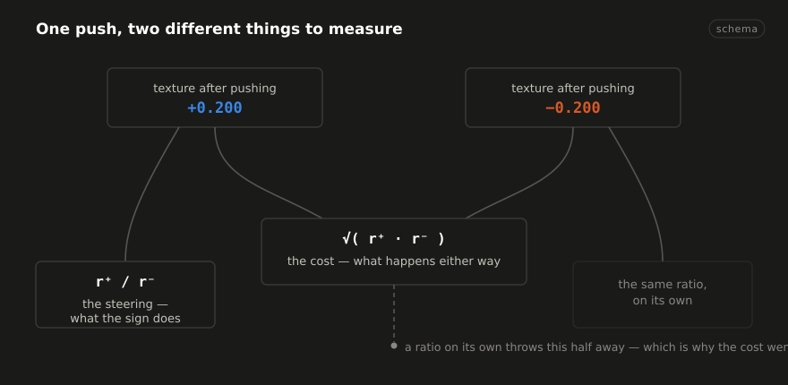
The ratio used in earlier work is s alone. It discards c by construction, which is why the
cost had never been seen. The decomposition is also better conditioned: averaging two
measurements cancels noise where differencing them adds it, so c carries half the noise of
s.
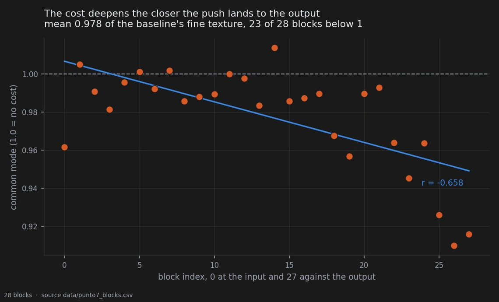
The numbers
Eight predictions were frozen in docs/prereg_punto7_simmetria_segno.md at 14:50, with the
destination folder verified empty. The verification script was written after the renders
completed, implementing the frozen §1 literally.
| prediction | outcome | |
|---|---|---|
| P1 | mean c < 1 in [0.94, 0.99]; ≥ 18 blocks below 1 |
confirmed — 0.978, 23/28 |
| P2 | mean |log m| > 0.03; fewer than 10 blocks within [0.97, 1.03] |
falsified — mean 0.048 as predicted, but 17/28 inside |
| P3 | block 0: r⁻ > 1.00, swing < 0.85 | confirmed — 1.100, 0.764 |
| P4 | blocks 23/25/26 all with c < 0.96 |
confirmed — 0.945, 0.926, 0.910 |
| P5 | ≤ 8 blocks with |log s| > 0.10 |
grey zone — 9 (falsification at ≥ 12) |
| P6 | no swing in pixel space above 1.5 | confirmed — maximum 1.393 |
| P7 | block 0 and ≥ 3 of blocks 23-27 with negative amplitude ≥ 3× the median of 1-15 | falsified — block 0 yes, but 1 of 5 |
| P8 | corr(index, log c) < -0.30 |
confirmed — r = -0.659 |
The prediction declared riskiest in advance, P8, passed most clearly. The one declared safest, P3, also passed. Both failures are informative rather than noise, and both are treated below.
The common mode is friction, not a knob
P1 and P8 together are the finding. Mean common mode 0.978: any perturbation, in any direction, costs on average 2.2% of the image's fine texture, and 23 blocks of 28 go that way. It holds at 11-14σ against a null built from 612 pairs of baseline renders.
The cost is not a slope, it is a step. The correlation against block index is r = -0.659, but across the first twenty blocks there is no descent at all (r = -0.221), only 13 of 27 consecutive steps go down where chance gives 13.5, and a step model fits 1.7× better than a line. The break falls at block 23 — the same block the trajectory-coherence measure found independently on the positive arm alone. Before it the cost is 1.2%, after it 6.8%.
And the cost is not damage to the weights. Repeating the measurement before the decoder, on the six macro groups where latents exist, the common mode is 1.021 — above 1. The perturbation adds high-frequency energy to the latent; the decoder does not deliver it. The depth gradient vanishes there too (r = -0.05 against -0.74 in pixels), so the depth dependence is the decoder's, not the model's. This is pitfall 62 at a new scale: the VAE passes a loss of detail and absorbs a gain.
So the accurate sentence is: pushing a block injects noise the decoder refuses to render as detail. For this notebook's purpose the practical consequence is unchanged — detail lost in the image is lost — but the mechanism sits downstream of the weights, and so does any remedy.
One dose only. On the norm-matched bench at D = 0.050, across three prompts, the common mode is 1.004 for scaling and 0.997 for rotation: at that displacement there is no cost at all. The toll is not a flat tax, it has a threshold, and where the threshold falls is not yet measured.
The first block runs backwards
r⁺ = 0.841 (smooths), r⁻ = 1.100 (etches), swing 0.764 — exactly the reverse of the tail, and exactly as extrapolated from the macro-group measurement (0.785 in pixels, 0.739 in latent).
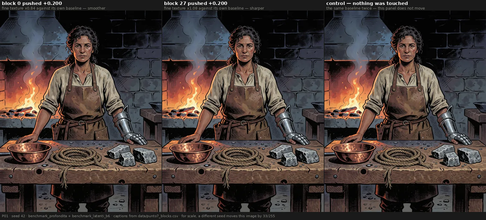
The control panel is the same baseline twice, so it does not move at all: at a fixed seed the null is exactly zero, and every flicker in the other two panels is the edit. For scale, a different seed moves this same image by 30 of 255 — more than block 0 does. That is the decorrelation ceiling, not a noise floor, and it is the reason the control here is not two seeds.
Together with the pre-registered Block_1 / Block_6 separability result of 2026-09-19, this is the second hypothesis frozen before the data that holds on the asymmetry between the two ends of the backbone — and the first on a statistic rather than on a distance.
The tail is rectified
| block | amplitude at +0.200 | at -0.200 | ratio |
|---|---|---|---|
| 26 | 13.62 | 1.50 | 9.1× |
| 22 | 4.80 | 0.97 | 5.0× |
| 25 | 8.78 | 3.06 | 2.9× |
| 24 | 3.97 | 1.41 | 2.8× |
| 23 | 8.81 | 3.95 | 2.2× |
| 18 | 6.66 | 3.51 | 1.9× |
| 0 | 11.44 | 7.88 | 1.5× |
| 27 | 8.98 | 14.75 | 0.6× |
Median across all 28 blocks: 1.60×. Both columns are on one scale — see the correction note in Why I might be wrong.
The tail is strongly rectified: pushed positive it transforms the image, pushed negative it barely moves. The single exception is block 27, the last one, which is more violent negative and is also the only tail block with a strong positive swing (1.393, the highest of the 28). Block 27 is an outlier on every axis here and deserves an experiment of its own.
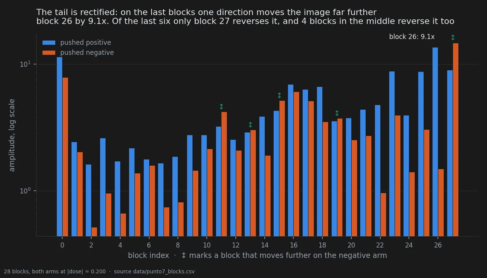
What I got wrong
P2 falsified, and the model is more regular than predicted. 17 blocks of 28 sit within 3σ of a perfectly bidirectional response. Mirror symmetry is the rule, not the exception. The 11 that break it are not scattered — they are blocks 0, 3, 13, 18, 19 and then every one of 22 through 27. Symmetry holds where nothing much happens and breaks where something does.
P7 falsified. I predicted the extremes would be violent in both directions. They are not — they are rectified, which is a different and more useful fact. Only one of the five predicted tail blocks met the criterion.
The controls
The floor bench. 32 renders and 32 latents. The two control renders (P01 and P02 at seed 42) are pixel-identical to the baselines of the earlier benches and the latents are bit-identical, so the 15 new seeds are comparable. σ(HF) measured across 18 seeds per prompt, 153 pairs each: 1.65% on P01 and 1.83% on P02.
A note on the gate itself: the first check failed because the specification asked for the
SHA-256 of the file. A PNG carries its ComfyUI graph in tEXt chunks, and the new script
writes a different graph, so file hashes differ at identical pixels. The correct test is on
pixels or on the IDAT stream. That was an error in the task specification, not in the data.
Composition from single blocks to groups. The product of single-block swings against the measured group swing holds within 3% on four groups of six and breaks on the two that contain the strongest individual effects — the same limit found in the dose-response work, where the response is sub-linear (median ratio 3.16 against a dose ratio of 4.00). Multiplicative composition is a good approximation while the regime stays linear.
What this page deliberately does not use. Direction measurements in pixel space for conditions that push several blocks at once. Those sit at the decorrelation ceiling — a pair of macro-blocks at +0.200 moves the image as far from its baseline as a different seed does — and carry no information about blocks. The control that settles it: replacing a block with a seed change does not lower the cosine (0.430 against 0.427). Recorded as pitfall 60.
Single blocks at ±0.200 sit above that ceiling, which is why this page stands: mean correlation with their own baseline 0.664, against a ceiling of 0.496 measured on the same corpus (the bench). But the margin is not uniform, and the honest version of that sentence has a second half: across the 56 individual renders the range runs 0.493 to 0.789, so the weakest single render sits at the ceiling rather than above it. The result here rests on cell means, which is where the margin lives; a claim about any single render would not survive.
An earlier write-up put the ceiling at 0.514 and the single-block figure at 0.660. Both come
out fractionally different when measured on this corpus with every pair counted, and the
notebook now quotes one number for one quantity, from data/bench_checks.csv.
The P2 row of the table above used to name the swing s where the pre-registration names the
specularity m. The verdict was always the specularity one — 17 of 28 blocks mirror-symmetric
within 3σ — and under s the same window holds only 8 blocks, which would not have falsified
anything. The pre-registration file was missing from the repository until 2026-09-21, so for a
day this table could not be checked against the document it reports on. All eight rows have now
been recomputed from data/punto7_blocks.csv against the restored §3, and P2 was the only one
that needed correcting.
Reproducing this
model:
checkpoint: krea2_turbo_bf16.safetensors
weight_dtype: default
sha256: not recorded — the file is outside the repository; see the note below
sampling:
sampler: euler_ancestral
steps: 9
cfg: 1.0
denoise: 1.0
scheduler: simple
resolution: 1024x1280
vae: qwen_image_vae.safetensors
tuner:
node: ArthemyKrea2ModelTuner
version: not recorded — the tuner is a separate repository
mode: Real Value, driven by vectors_override
prompts:
file: data/prompts.json
ids: [P01, P02]
seeds: [42, 777, 1337]
conditions:
- name: blkNNneg
dose: -0.200
measured_D: not recorded per block; the dose is a gain, not a calibrated displacement
- name: blkNNpos
dose: +0.200
measured_D: not recorded per block; the dose is a gain, not a calibrated displacement
outputs:
folder: benchmark_profondita_neg/renders
manifest: data/punto7_manifest.csv
analysis:
script: experiments/verifica_punto7.py
sha256: d9c9c818c3f50fe67feacdb1efbf14f6f21ae049dcda8887293cdd0717cc2cd1
produces: data/punto7_blocks.csv
related: data/bench_checks.csv — the ceiling and the usable-regime margin
note: >
every value above was read back out of the renders themselves by
experiments/extract_repro.py, which also asserts that all 336 renders of this
page share one sampler configuration. They do.
Provenance
- Pre-registration:
docs/prereg_punto7_simmetria_segno.md, deposited 14:50 with the destination folder verified empty - Measurement files:
data/punto7_blocks.csv(28 rows: r+, r-, common mode, swing, specularity, both amplitudes) - Scripts:
experiments/verifica_punto7.py,experiments/run_pavimento_rumore.py,experiments/analisi_modo_comune.py - Renders:
benchmark_profondita_neg/(168, new),benchmark_profondita/(168, pre-existing),benchmark_pavimento_rumore/(32) - Pitfalls that apply: 2 (unsigned distance), 43 (averaging over signs), 57 (one-sided sweep), 60 (decorrelation ceiling), 61 (ratio with noise in the denominator), 62 (threshold calibrated on three seeds)
Holds560 renders · 16 prompts · 5 seeds · pre-registered · 2026-09-21
The hatching axis, and the sign that decides it
In two minutes
It started the way most things here start: by looking. Across renders already seen, one edit seemed to shade with parallel strokes when pushed one way and with cross-hatching when pushed the other. The estimate by eye was 95%.
What makes this one different is that nothing had to be scored. Parallel against crossed is a spread of stroke orientations, and a measure of exactly that — the entropy of local cross-hatching — had been in the feature set since the first day, computed by an unmodified script with no human in the loop. So the prediction could be written as a sign, per family, frozen before the next batch existed, with a clause saying that a family reaching significance with the wrong sign counts as a failure rather than a partial success.
Then it came back, on sixteen prompts sharing no text with the corpus the idea came from.
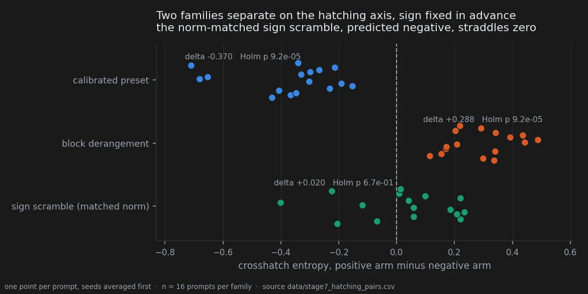
Two of the three families landed on their predicted side of zero in every single prompt, at the smallest value the test can return. The third — the sign scramble carrying the same displacement, which had shown the effect in the exploratory round — was simply not there.
That third failure is the part worth having. Had all three held, the hatching axis would have been a property of reversing any displacement at all. It is not: it belongs to the two structured directions, and the control matched to the identical Frobenius norm does not produce it.
The verdict
The primary prediction, as written, was not met. It was a conjunction over three families, and one of the three did not fire. Reporting the other two as a success requires saying that first, because a conjunction that fails is a prediction that failed.
What survives is narrower and, for the argument the notebook is making, stronger. There is an axis in stroke orientation; the sign of a structured displacement decides where you sit on it; and which sign gives which texture depends on which structured direction you moved in — where the derangement crosses the strokes, the preset runs them parallel. Both at the exact permutation floor, both with every prompt and almost every image pair on the predicted side. The norm-matched scramble does nothing, and its exploratory effect did not replicate.
One reservation is not statistical and is carried in the claims above: the measure was validated against the eye on the derangement family and never on the preset family, by the pre-registration's own account, and the check it scheduled to close that gap has no recorded outcome.
Why I might be wrong
The primary was a conjunction and it failed. Two of three is not three of three. The document said so at the time and this page says it again, because the temptation to report the two that worked and call the third a control is exactly the move the clause about wrong signs was written to block.
The measure is a proxy, and a better one was deliberately not used. Crosshatch entropy is a spread of local orientations, not a count of stroke crossings. The instrument that measures the phenomenon directly — the histogram of edge-gradient orientations, unimodal for parallel and bimodal for crossed — exists and was left for a later round on purpose, because swapping the instrument between the observation and its confirmation would confirm a different claim. That reasoning is right and it leaves the result resting on a proxy.
The exploratory numbers on this page cannot be recomputed from the repository. The
comparison table below quotes the 18-prompt exploratory round from the pre-registration's own
frozen text. data/style_features.csv holds 24 prompts across these families and no record of
which 18 the earlier table used; recomputed over all 24 it gives -0.470, +0.257 and -0.152
against the -0.484, +0.274 and -0.187 on record. Close, same signs, not the same numbers, and
the subset that would reconcile them is not in data/.
One prompt family, one model, one aesthetic register. All sixteen prompts open on
Western comics style and contain hatched shadows. The axis is measured inside a style that
explicitly asks the model to hatch. Whether a structured displacement does anything at all to a
style that does not hatch is untested, and the honest reading is that it might do nothing. The
pre-registration for that test exists and has not been run.
The origin was discovery by eye, and the eye is not blind. The 95% estimate and the 87/90 that quantified it both came from renders already seen, by someone who knew the hypothesis. That is pitfall 34 and it is why this round exists. It does not touch the confirmation, where nobody scores anything.
The data
How it was measured
Sixteen prompts selected by a rule fixed before the renders, five seeds, seven conditions:
560 images, manifest in data/stage7b_images.csv, features in
data/style_features_stage7.csv. The quantity is crosshatch_entropy_mean, produced by
style_features.extract_all_features unchanged — the same function that produced the
exploratory numbers, so the confirmation measures the same thing the observation did.
The statistic is the difference between the positive and the negative arm of a family. Seeds are averaged inside a prompt first, because the unit of analysis is the prompt and seeds sharing a prompt are repeated measures on one subject; treating the eighty pairs as eighty independent observations is pitfall 17. Exact two-tailed sign-flip permutation over the sixteen prompts, Holm-corrected across the three families.
The two structured families
| family | predicted sign | Δ observed | Holm p | prompts on the predicted side | image pairs |
|---|---|---|---|---|---|
| calibrated preset | negative | −0.370 | 9.2 × 10⁻⁵ | 16 / 16 | 80 / 80 |
| block derangement | positive | +0.288 | 9.2 × 10⁻⁵ | 16 / 16 | 79 / 80 |
| sign scramble, matched norm | negative | +0.020 | 0.67 | 5 / 16 | 30 / 80 |
9.2 × 10⁻⁵ is the Holm-corrected exact permutation floor at sixteen prompts, 2/2¹⁶ before correction. It is the smallest value this test can return and it should be read as "below the resolution of the design", not as a measured quantity.
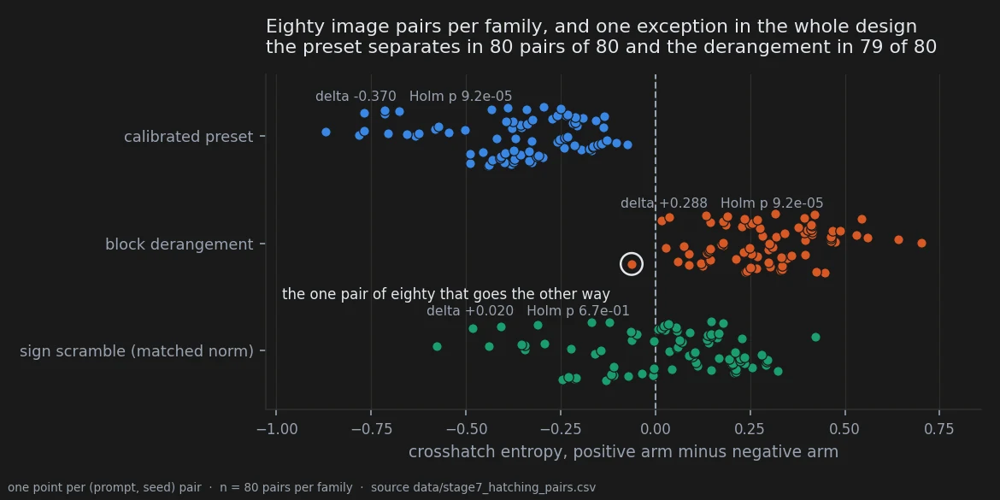
Eighty pairs of eighty, and seventy-nine of eighty. One image pair in the entire design goes the other way, and it sits just past zero rather than out among the opposite family. That is what "the texture is not a lucky render" looks like when it is drawn rather than asserted.
A number in the published table is counted on a different rule from the two above it, and it
is corrected here. The earlier write-up gives the sign scramble as 11/16 prompts and 50/80
pairs, in the same column where the preset reads 16/16 and 80/80. Those two count agreement
with the predicted sign; the scramble's figures count agreement with its observed one.
Under the rule the other two rows use, the scramble is 5/16 and 30/80 — it goes the
predicted way in fewer than half of its pairs. Both readings say the same thing about the
verdict, and only one of them is comparable with the rows beside it. Both are written out in
data/stage7_hatching_summary.csv.
The control that vanished
The sign scramble was not an afterthought. In the exploratory round it was the third family of a real effect, and it was predicted to repeat.
| exploratory, 18 prompts | confirmation, 16 new prompts | |
|---|---|---|
| calibrated preset | −0.484, 90 pairs of 90 | −0.370, 80 of 80 |
| block derangement | +0.274, 87 of 90 | +0.288, 79 of 80 |
| sign scramble | −0.187, 81 of 90 | +0.020, 30 of 80 |
The two structured directions held their effect size across an independent corpus of new subjects — the derangement to within five per cent, which is the closest any exploratory estimate in this notebook has come to surviving intact. The random one collapsed: the sign reversed and the concordance fell to a coin.
This is the Experiment 1 argument reproduced on a second visual property: structure rather than magnitude, with a mechanical measurement and nobody scoring anything. Two points still do not identify which structural property does the work.
The exploratory column is quoted from the pre-registration's frozen text, not recomputed here; see Why I might be wrong.
The check that was registered, and not recorded
The pre-registration is explicit about why the measure is allowed to stand in for what the eye
saw: crosshatch_entropy_mean reproduces, at 87 pairs of 90, a distinction made visually on
the block-derangement family. That is the licence, and it covers one family.
It then says, in its own words, that the measure fires on the other two families with different
signs and that this has not been checked against the eye; that before stage 7 is analysed
one preset_pos / preset_neg pair is to be inspected and the outcome recorded; and that if
the predicted direction is not what is seen, the preset row of the prediction is withdrawn in
writing rather than reinterpreted afterwards.
No outcome for that check exists. The document says "that check is recorded here, with its
date, before the analysis" and the record is not in it, nor anywhere else in docs/. The
statistics for the preset row are not in doubt — 16 of 16 and 80 of 80 at the floor, on the same
measurement as the family where the licence was established. What is undetermined is whether
that measurement means hatching orientation in this family or something else that moves with
it, which is the question the check was written to settle and the reason the preset claim above
is filed as ambiguous rather than as holding.
Closing it costs one look at one pair of images. Until then, this page reports the preset row and declines to lean on it.
Reproducing this
model:
checkpoint: krea2_turbo_bf16.safetensors
weight_dtype: default
sha256: not recorded -- the file is outside the repository
text_encoder: qwen3vl_4b_bf16.safetensors
vae: qwen_image_vae.safetensors
sampling:
sampler: euler_ancestral
steps: 9
cfg: 1.0
denoise: 1.0
scheduler: simple
resolution: 1024x1280
tuner:
node: ArthemyKrea2PresetLoader
version: not recorded -- suite_git_sha ba28b12532175220
mode: preset_json
strength_model: 1.0
strength_clip: 1.0
prompts:
file: data/stage7b_images.csv
selection: data/confirmation_prompts.csv
selected_by: experiments/select_confirmation_prompts.py
ids: 16 prompt_sha1 values, frozen before rendering
seeds: [42, 777, 1337, 9999, 4242145]
conditions:
- name: preset_pos
preset: Arthemy_Bench_Base.json
measured_D: 0.05381584 # relative, DiT; data/preset_displacements.csv, status PASS
- name: preset_neg
preset: Arthemy_Bench_NEG.json
measured_D: 0.05381584
- name: blockshuf_pos
preset: Arthemy_Bench_BLOCKSHUFFLE.json
measured_D: 0.05381584
- name: blockshuf_neg
preset: Arthemy_Bench_BLOCKSHUFFLE_NEG.json
measured_D: 0.05381584
- name: rand_pos
preset: Arthemy_Bench_RANDSIGN.json
measured_D: 0.05381584
- name: rand_neg
preset: Arthemy_Bench_RANDSIGN_NEG.json
measured_D: 0.05381584
- name: baseline
preset: null
measured_D: 0.0
outputs:
folder: benchmark_stage7/renders
manifest: data/stage7b_images.csv
analysis:
features: data/style_features_stage7.csv
script: experiments/stage7_hatching_axis.py
produces:
- data/stage7_hatching_pairs.csv
- data/stage7_hatching_summary.csv
figures: experiments/notebook_charts.py
Two gaps a stranger would hit. The renders live outside the repository, so the features file is
the reproducible starting point rather than the images. And data/preset_displacements.csv
gives every one of these presets the same relative displacement, 0.05381584 — that is the
design, the controls are matched by construction, and pitfall 45 is the reminder that a
permuted control does not inherit the target displacement automatically and has to be
measured, which here it was.
Provenance
Pre-registration. docs/prereg_hatching_axis_stage7.md, written 2026-09-17 before any
stage 7 render, carrying the per-family signs, the wrong-sign failure clause, the 14-of-16
secondary concordance threshold, the metric-validity argument and the unrecorded check.
Measurement files. data/style_features_stage7.csv (600 rows, 560 after the selection),
data/confirmation_prompts.csv (the 16 frozen prompt hashes),
data/stage7b_images.csv (the manifest with sampler settings and prompt text),
data/preset_displacements.csv (measured displacements), and two tables derived here on
2026-09-21: data/stage7_hatching_pairs.csv (240 seed-level pairs) and
data/stage7_hatching_summary.csv (the family table, with both counting rules named).
Scripts. experiments/stage7_hatching_axis.py, experiments/notebook_charts.py,
experiments/style_features.py, experiments/style_from_manifest.py,
experiments/select_confirmation_prompts.py, experiments/run_stage7b.py.
Written up in. docs/reproduce_stage7.md.
Read against. The chromatic confirmation ran on these same 560 renders the same day and came out the other way round: every colour effect roughly halved and its strongest condition was the sign scramble, where here the structured conditions hold their size and the scramble vanishes. Same displacements, same images, opposite patterns, so colour and texture are not two readings of one signature.
Pitfalls that apply. 17 (seeds inside a prompt are repeated measures, so the unit is the prompt), 34 (the observation that started this came from an expert eye on renders already seen, which is why a confirmation was needed), 38 (a metric validated against nothing — the pre-registration argues the licence for one family and declares it missing for another).
Rules 8 and 11 of the fifteen apply to the floor: at sixteen prompts the exact test cannot return less than 2/2¹⁶, and both structured families sit on it.
Ambiguous560 renders · 16 prompts · 5 seeds · pre-registered · 2026-09-21
What the edit does to colour, and what it does not
In two minutes
The idea was that every weight edit leaves its own fingerprint on colour — not just the calibrated preset, but the sign scramble too, each pushing the palette in a direction of its own. That is a stronger claim than "the preset changes colour", and it was written down as two separate tests with their thresholds fixed before a single confirmation render existed.
One came back yes. The other came back three of six, against a bar of four.
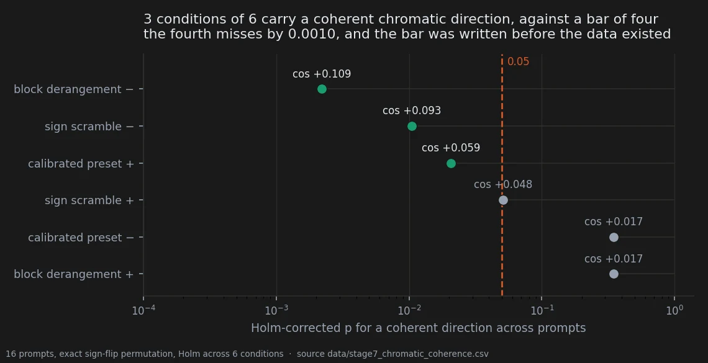
Three is not four, and the pre-registration had already said what to do about three: report it as ambiguous, do not round it up. The condition that would have made it four misses the corrected threshold by one part in a thousand. That single dot, sitting a hair on the wrong side of a line drawn before the data existed, is the entire reason the line was drawn first.
What did hold is the second test, and it is the one worth having: the conditions move colour in directions that differ from one another. That has now landed on the floor of its permutation test twice, on two corpora with no prompt in common.
So: different displacements move colour differently is the claim the notebook carries. Every displacement has its own chromatic signature is the claim that failed.
The verdict
The page is filed ambiguous, and it is filed that way on purpose even though one of its two registered primaries was confirmed. The thing the page is named for — a chromatic signature per edit — is the test that returned three of six, and the contract says an ambiguous result is written as ambiguous and never rounded up. The distinction it turns on is not cosmetic.
Beneath that, two solid things and one open one. Solid: the conditions are distinguishable from each other in colour space, twice, at the floor. Also solid, in the uncomfortable direction: the effects on this corpus are about half the exploratory estimate, which is the third time this notebook has watched that happen.
The open one is why they halved. There are two explanations, the design cannot separate them, and the second was hiding in this repository's own earlier work the whole time.
Why I might be wrong
The corpus did not meet its own coverage requirement. The amendment asked for four prompts in each of four 90° hue arcs. The selection returned fourteen in the first arc, one in the second, one in the fourth and none in the third. The rule executed as written and filled the shortfall from the largest arc; the candidate pool simply did not contain what was asked for. The lesson is specific and is now pitfall 31: hue is a property of the render, not of the prompt text, so a criterion stated on measured hue can only be enforced by looking at images and then choosing. Note the direction of that bias — a corpus of more similar prompts should make cross-prompt coherence easier to detect, not harder, so it does not excuse the result.
The shrinkage has a second explanation, and the design cannot separate it from the first. The account offered at the time was regression from an inflated exploratory estimate. Here is the other one:
| colour-pinned prompts | mean within-condition coherence | |
|---|---|---|
| exploratory, 18 prompts | 18 of 18 | +0.120 |
| confirmation, 16 prompts | 0 of 16 | +0.057 |
Every prompt in the exploratory set names a colour — monochromatic <colour>, or a
colour-tinted rim light. Not one prompt in the confirmation set does. The mark-style work had
already established, on a different colour instrument, that the palette effect is present where
the prompt pins the palette and vanishes where it does not, and the confirmation was then run
entirely on the side where that predicts little to find. The corpus changed on that variable at
the same time as it changed from exploratory to confirmatory, and the two cannot be untangled
afterwards. That is a design error and it belongs to this pre-registration, which fixed the
statistics, the thresholds and the script hashes and did not fix the one prompt property
already known to govern the effect being measured.
The ranking of conditions is partly a ranking of what was measured best. Cross-prompt
coherence is attenuated by measurement error and the conditions do not share an error level.
The ordering here correlates with each condition's own split-half reliability at r = +0.877,
p = 0.022. The order survives disattenuation and the verdict stands, but a reader comparing
block derangement − against calibrated preset + is partly comparing precision. That is
pitfall 36.
A frozen script was not at its frozen hash. Recorded in full below; it is inert here and it is still a broken freeze.
One instrument, one framing. Six swatches plus paper and ink, on close-up character portraits where the swatches are dominated by skin and paper whatever the scene describes.
The data
How it was measured
Sixteen prompts sharing no prompt_sha1 with any earlier stage, five seeds, seven cells —
baseline plus six conditions: 560 renders, verified before analysis as sixteen prompts by seven
by five with no cell short of a seed and no duplicates.
The feature space is colour and nothing else: six palette swatches plus paper and ink, each as (L*, a*, b*), giving 24 dimensions. Hue in degrees is circular and cannot be averaged or subtracted — 359 and 1 are two degrees apart, not 358 — so a* and b* are reconstructed from chroma and hue. Mass shares stay out; they are composition, not colour.
Every vector is a difference from the same prompt at the same seed in baseline. On absolute features the between-subject variance dominates and the analysis measures which character is depicted, which is pitfall 19. Seeds inside a prompt are averaged first, because the unit of analysis is the prompt (pitfall 17). Each dimension is then divided by its standard deviation over the set of differences, and each prompt's vector is normalised.
Two tests, both fixed in advance:
- coherence — for one condition, the mean pairwise cosine between its per-prompt direction vectors. Null: exact sign-flip permutation across the sixteen prompts, Holm across the six conditions. Confirmed at four of six surviving; refuted at two or fewer; three ambiguous and reported as such.
- distinctness — mean within-condition coherence minus the mean absolute cosine between different conditions, both over pairs of distinct prompts so that prompt structure cannot enter on one side only. Null: permutation of the condition labels inside each prompt, 10 000 draws. Confirmed at p < 0.05.
The absolute value on the between-condition term matters: a pos/neg pair sitting at −1 would be maximally aligned, not independent, and has to count as such.
Three of six, and the bar was four
| condition | cosine | p | Holm | survives |
|---|---|---|---|---|
| block derangement − | +0.109 | 3.7 × 10⁻⁴ | 2.2 × 10⁻³ | yes |
| sign scramble − | +0.093 | 2.1 × 10⁻³ | 1.1 × 10⁻² | yes |
| calibrated preset + | +0.059 | 5.2 × 10⁻³ | 2.1 × 10⁻² | yes |
| sign scramble + | +0.048 | 1.7 × 10⁻² | 5.10 × 10⁻² | no |
| calibrated preset − | +0.017 | 1.7 × 10⁻¹ | 3.5 × 10⁻¹ | no |
| block derangement + | +0.017 | 2.0 × 10⁻¹ | 3.5 × 10⁻¹ | no |
Three. The registered rule read: four or more confirmed, two or fewer refuted, three ambiguous and reported as ambiguous rather than rounded up. So: ambiguous.
There was also a directional secondary, and it failed on its own terms. The prediction named which four would survive — sign scramble in both directions, preset positive, derangement negative — and the observed three are derangement negative, sign scramble negative and preset positive. Three of the four named, with the sign scramble's positive arm dropping out. The prediction was about which, not how many, and the set does not match.
The directions differ, and that is the claim that holds
Within-condition coherence +0.057. Mean absolute cosine between different conditions +0.023. Difference +0.035, against a label-permutation null whose mean is −0.003 and whose 95th percentile is +0.007. p = 1 × 10⁻⁴, which is the Monte Carlo floor at 10 000 draws rather than a measured value.
This is the second independent corpus on which that statistic has hit its floor. It is also the test that does not depend on any single condition clearing a threshold, which is why it survives a corpus where four of six individually do not.
Read the two together and the shape of the result is: the six conditions are distinguishable from one another in colour space, while only some of them are individually consistent enough across subjects to be called a signature.
What shrank, and the confound that explains it just as well
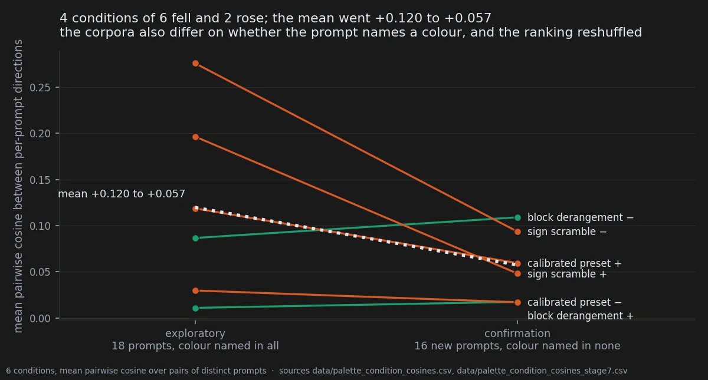
| condition | exploratory, 18 prompts | confirmation, 16 new |
|---|---|---|
| sign scramble − | +0.276 | +0.093 |
| sign scramble + | +0.196 | +0.048 |
| calibrated preset + | +0.119 | +0.059 |
| block derangement − | +0.087 | +0.109 |
| block derangement + | +0.030 | +0.017 |
| calibrated preset − | +0.011 | +0.017 |
| mean | +0.120 | +0.057 |
The mean halved. The two conditions that were strongest collapsed to roughly a third, and the condition that was fourth is now first. The power curve in the amendment assumed the true effect equalled the exploratory one and predicted about 100% power at sixteen prompts; the true effect is about half that, and the sentence "sixteen is a floor, not a margin" turned out to be the operative one.
Whether that is regression to the mean or the colour-pinning confound is exactly what this design cannot say. The test that separates them is cheap: matched pairs, the same subject written twice — once with the colour-pinning clause and once without — rendered in one run under the same six conditions and the same five seeds, with the coherence compared between the two arms. If the pinned arm returns to about +0.12 while the free arm stays near +0.06, prompt-stated colour is the governing variable and the confirmation was run on the wrong side of it. If both sit near +0.06, the exploratory estimate was simply inflated and the ambiguous verdict stands on its own feet. That test has not been run.
Until it does, this page must not be read as colour signatures are weak. It reads as: tested on prompts that do not name a colour, three conditions of six carry a coherent chromatic direction, and whether naming a colour changes that is an open and registered question.
Colour and texture are not one signature
The hatching confirmation ran on these same 560 renders, the same day, and came out the other way round.
| colour, here | texture, on the hatching axis | |
|---|---|---|
| effect sizes against the exploratory round | roughly halved | held, one within 5% |
| the norm-matched sign scramble | among the strongest conditions | absent, and its exploratory effect did not replicate |
Same displacements, same images, opposite patterns. So these are not two readings of one signature. Texture responds to the sign of a structured displacement, close to deterministically. Colour responds to displacement more diffusely and does not tell structure from noise in the same way. Whatever these perturbations turn out to be doing has to account for both, and nothing here does.
The deviations, recorded
The frozen script was not at its frozen hash. analyze_palette_coherence.py read
1888908f95cf against the registered 1d07551eadcd. The cause: a reporting bug was fixed in
that script — it printed the exact permutation floor while running Monte Carlo above sixteen
prompts — hours after the document naming its hash was written. That is pitfall 32. The frozen
version was reconstructed by inverting the patch, hashes to 1d07551eadcd exactly, and the
analysis on record is that script's output; the current version then produced identical numbers
to every printed digit, because at sixteen prompts both take the exact enumeration path and the
edit touched only the Monte Carlo branch and a print statement. The deviation is inert here. It
is recorded because a freeze honoured only when convenient is not a freeze.
The coverage requirement was not met, as described above, and its failure mode is pitfall 31.
A centering convention differs between two scripts in this family.
analyze_palette_coherence.py divides by σ without centering; the stage 9 script subtracts the
joint mean. Subtracting a common vector that is not a group's own mean leaves a shared −μ
component in every one of its vectors, which inflates apparent agreement. That is pitfall 37,
and it is why coherence numbers from the two scripts are not comparable with each other. Every
number on this page comes from the first.
Reproducing this
model:
checkpoint: krea2_turbo_bf16.safetensors
weight_dtype: default
sha256: not recorded -- the file is outside the repository
text_encoder: qwen3vl_4b_bf16.safetensors
vae: qwen_image_vae.safetensors
sampling:
sampler: euler_ancestral
steps: 9
cfg: 1.0
denoise: 1.0
scheduler: simple
resolution: 1024x1280
tuner:
node: ArthemyKrea2PresetLoader
version: not recorded -- suite_git_sha ba28b12532175220
mode: preset_json
strength_model: 1.0
strength_clip: 1.0
prompts:
file: data/stage7b_images.csv
selection: data/confirmation_prompts.csv
selected_by: experiments/select_confirmation_prompts.py
ids: 16 prompt_sha1 values, hashed and frozen before rendering
note: no prompt_sha1 shared with stage 4, 5 or 6, verified before analysis
seeds: [42, 777, 1337, 9999, 4242145]
conditions:
- name: preset_pos
preset: Arthemy_Bench_Base.json
measured_D: 0.05381584 # relative, DiT; data/preset_displacements.csv, status PASS
- name: preset_neg
preset: Arthemy_Bench_NEG.json
measured_D: 0.05381584
- name: blockshuf_pos
preset: Arthemy_Bench_BLOCKSHUFFLE.json
measured_D: 0.05381584
- name: blockshuf_neg
preset: Arthemy_Bench_BLOCKSHUFFLE_NEG.json
measured_D: 0.05381584
- name: rand_pos
preset: Arthemy_Bench_RANDSIGN.json
measured_D: 0.05381584
- name: rand_neg
preset: Arthemy_Bench_RANDSIGN_NEG.json
measured_D: 0.05381584
- name: baseline
preset: null
measured_D: 0.0
outputs:
folder: benchmark_stage7/renders
manifest: data/stage7b_images.csv
analysis:
features: data/palette_features_stage7_all.csv
frozen_script: experiments/analyze_palette_coherence.py
frozen_hash: 1d07551eadcd
produces: data/palette_condition_cosines_stage7.csv
persisted_by: experiments/stage7_chromatic_coherence.py
produces_table: data/stage7_chromatic_coherence.csv
figures: experiments/notebook_charts.py
experiments/stage7_chromatic_coherence.py does not re-implement the analysis. It imports the
frozen module's own functions, repeats its orchestration, and refuses to write anything unless
every recomputed coherence agrees with data/palette_condition_cosines_stage7.csv — the matrix
the frozen run wrote — to four decimals. It adds the Holm column, the pass/fail against the
registered bar and the exploratory comparison, none of which existed in a file.
Provenance
Pre-registration. docs/prereg_chromatic_signatures.md, written 2026-09-16 with the two
tests, the four-of-six bar, the explicit instruction not to round three up, the directional
secondary, the corpus rule and the frozen script hashes; amended 2026-09-17 before any
confirmation render; result and two deviations recorded in the same document; addendum the same
evening recording the colour-pinning confound after the result was written.
Measurement files. data/palette_features_stage7_all.csv (the 560-row feature table),
data/palette_condition_cosines_stage7.csv (the frozen run's matrix),
data/palette_condition_cosines.csv (the exploratory matrix, 18 prompts),
data/confirmation_prompts.csv, data/stage7b_images.csv, data/preset_displacements.csv,
and data/stage7_chromatic_coherence.csv, derived here on 2026-09-21.
Scripts. experiments/analyze_palette_coherence.py (frozen),
experiments/stage7_chromatic_coherence.py, experiments/notebook_charts.py,
experiments/palette_from_manifest.py, experiments/analyze_palette.py,
experiments/palette_stage4_baseline.py.
Written up in. docs/reproduce_stage7.md.
Pitfalls that apply. 17 (seeds inside a prompt are repeated measures), 19 (paired differences rather than absolute features, or the analysis measures which character is depicted), 31 (a stratification criterion that can only be checked after rendering — this corpus is the registry's own example), 32 (a script edited after its hash was frozen — likewise), 36 (a ranking that is partly a ranking of what was measured best), 37 (two coherence statistics computed under different centering conventions).